9. Etude de cas
9.1. Introduction
Nous allons présenter une étude de cas déjà publiée dans un article disponible à l'URL [http://tahe.developpez.com/dotnet/pam-aspnet/]. Dans cet article, l'étude de cas est réalisée avec ASP.NET classique et l'ORM NHibernate. Nous allons ici, la réaliser avec ASP.NET MVC et l'ORM Entity Framework. Comme dans l'article existant, l'étude de cas est présentée comme un TD d'université. Elle est donc destinée à des étudiants. Pour toutes les questions, des renvois aux chapitres que nous venons de détailler sont faits pour indiquer les lectures utiles.
9.2. Le problème à résoudre
Nous souhaitons écrire une application web permettant à un utilisateur de faire des simulations de calcul de la paie des assistantes maternelles de l'association " Maison de la petite enfance " d'une commune. Nous nous intéresserons autant à l'organisation du code DotNet de l'application qu'au code lui-même.
L'application sera de type APU [Application à Page Unique] et utilisera exclusivement des appels Ajax pour communiquer avec le serveur. Elle présentera à l'utilisateur les vues suivantes :
- la vue [VueSaisies] qui présente le formulaire de simulation
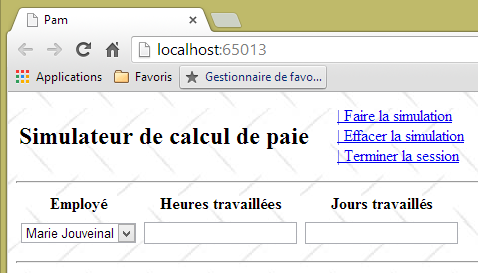
- la vue [VueSimulation] utilisée pour afficher le résultat détaillé de la simulation :

- la vue [VueSimulations] qui donne la liste des simulations faites par le client

- la vue [VueSimulationsVides] qui indique que le client n'a pas ou plus de simulations :

- la vue [VueErreurs] qui indique une ou plusieurs erreurs (ici le SGBD MySQL a été arrêté) :

9.3. Architecture de l'application
L'architecture de l'application sera la suivante :
 |
La couche [EF5] désigne l'ORM Entity Framework 5. Le SGBD utilisé sera MySQL.
Nous construirons cette application d'abord avec une couche [métier] simulée :
 |
Cela nous permettra de nous concentrer uniquement sur la couche [web]. La couche [métier] simulée respectera l'interface de la couche [métier] réelle. Lorsque la couche [web] sera opérationnelle, on construira alors les couches [métier], [DAO] et [EF5].
9.4. La base de données
Les données statiques utiles pour construire la fiche de paie sont placées dans une base de données MySQL nommée [dbpam_ef5] (pam=Paie Assistante Maternelle). Cette base a un administrateur appelé root sans mot de passe. Elle a trois tables :
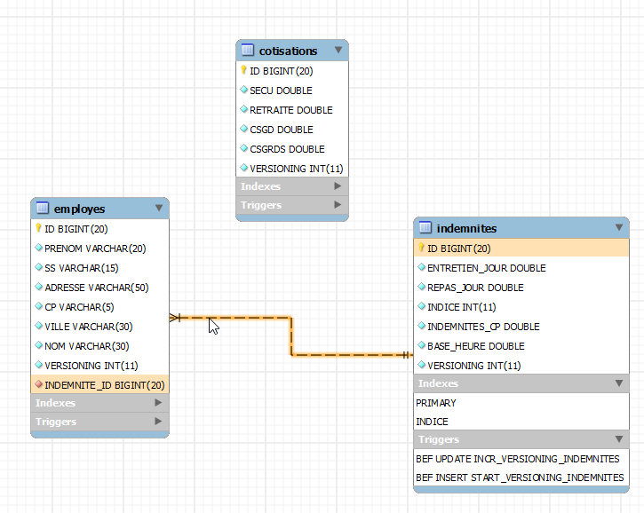
Il y a une relation de clé étrangère entre la colonne EMPLOYES(INDEMNITE_ID) et la colonne INDEMNITES(ID). La structure de cette base est dictée par son utilisation avec EF5. Nous reviendrons dessus lorsque nous construirons les couches basses de l'application.
Structure :
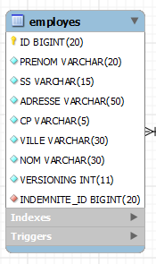 |
|
Son contenu pourrait être le suivant :

Structure :
 |
|
Son contenu pourrait être le suivant :

Les taux des cotisations sociales sont indépendants du salarié. La table précédente n'a qu'une ligne.
 |
|
Son contenu pourrait être le suivant :
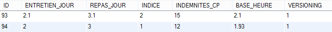
9.5. Mode de calcul du salaire d'une assistante maternelle
Nous présentons maintenant le mode de calcul du salaire mensuel d'une assistante maternelle. Nous prenons pour exemple, le salaire de Mme Marie Jouveinal qui a travaillé 150 h sur 20 jours pendant le mois à payer.
Les éléments suivants sont pris en compte : | [TOTALHEURES]: total des heures travaillées dans le mois [TOTALJOURS]: total des jours travaillés dans le mois | [TOTALHEURES]=150 [TOTALJOURS]= 20 |
Le salaire de base de l'assistante maternelle est donné par la formule suivante : | [SALAIREBASE]=([TOTALHEURES]*[BASEHEURE])*(1+[INDEMNITESCP]/100) | [SALAIREBASE]=(150*[2.1])*(1+0.15)= 362,25 |
Un certain nombre de cotisations sociales doivent être prélevées sur ce salaire de base : | Contribution sociale généralisée et contribution au remboursement de la dette sociale : [SALAIREBASE]*[CSGRDS/100] Contribution sociale généralisée déductible : [SALAIREBASE]*[CSGD/100] Sécurité sociale, veuvage, vieillesse : [SALAIREBASE]*[SECU/100] Retraite Complémentaire + AGPF + Assurance Chômage : [SALAIREBASE]*[RETRAITE/100] | CSGRDS : 12,64 CSGD : 22,28 Sécurité sociale : 34,02 Retraite : 28,55 |
Total des cotisations sociales : | [COTISATIONSSOCIALES]=[SALAIREBASE]*(CSGRDS+CSGD+SECU+RETRAITE)/100 | [COTISATIONSSOCIALES]=97,48 |
Par ailleurs, l'assistante maternelle a droit, chaque jour travaillé, à une indemnité d'entretien ainsi qu'à une indemnité de repas. A ce titre elle reçoit les indemnités suivantes : | [Indemnités]=[TOTALJOURS]*(ENTRETIENJOUR+REPASJOUR) | [INDEMNITES]=104 |
Au final, le salaire net à payer à l'assistante maternelle est le suivant : | [SALAIREBASE]-[COTISATIONSSOCIALES]+[INDEMNITÉS] | [salaire NET]=368,77 |
9.6. Le projet Visual Studio de la couche [web]
Le projet Visual Web Developer de l'application sera le suivant :
 |
- en [1], la structure générale du projet [pam-web-01] ;
- en [2], le dossier [Content] est le dossier où l'on met les ressources statiques du projet :
- [indicator.gif] : l'image animée de l'attente de fin d'une requête Ajax,
- [standard.jpg] : l'image de fond des différentes vues,
- [Site.css] : la feuille de style de l'application ;
- en [3], l'unique contrôleur de l'application [PamController] ;
- en [4], des classes nécessaires à l'application mais ne pouvant être cataloguées comme éléments du MVC :
- [ApplicationModelBinder] : la classe qui permet d'inclure les données de portée [Application] dans le modèle des actions,
- [SessionModelBinder] : la classe qui permet d'inclure les données de portée [Session] dans le modèle des actions,
- [Static] une classe d'aide avec des méthodes statiques ;
- en [5], les modèles de l'application, que ce soit des modèles d'actions ou de vues :
- [ApplicationModel] : modèle contenant les données de portée [Application],
- [SessionModel] : modèle contenant les données de portée [Session],
- [Simulation] : classe encapsulant les éléments d'une simulation de calcul de salaire,
- [IndexModel] : modèle de la première vue [Index] affichée par l'application ;
- en [6], les scripts JS nécessaires à la globalisation de l'application ;
- en [7], les scripts JS de la famille JQuery nécessaires à l'internationalisation, la validation côté client et l'ajaxification de l'application ;
- en [8], [myScripts.js] est le fichier contenant nos propres scripts JS ;
- en [9], les vues de l'application :
- [Index] : la page d'accueil,
- [Formulaire] : formulaire de saisie de l'employé et de ses heures et jours travaillés,
- [Simulation] : la vue présentant une simulation,
- [Simulations] : la vue présentant la liste des simulations faites,
- [Erreurs] : la vue présentant la liste des éventuelles erreurs,
- [InitFailed] : la vue affichant des messages d'erreurs si l'initialisation de l'application échoue ;
- en [10], la page maître de l'application [_Layout] ;
- en [11], les fichiers [Web.config], [Global.asax] utilisés pour configurer l'application.
9.7. Étape 1 – mise en place de couche [métier] simulée
A partir de maintenant, nous décrivons les étapes à suivre pour réaliser l'étude de cas. Lorsque c'est utile, nous rappelons le n° du chapitre à relire éventuellement pour réaliser le travail demandé. Certains éléments du projet vous sont donnés dans un dossier [aspnetmvc-support.zip] qu'on trouvera sur le site de ce document. On y trouvera le dossier [étudedecas-support] avec le contenu suivant :
 |
Le projet reprend par ailleurs des éléments présentés dans les chapitres précédents. Il suffit alors de récupérer ceux-ci par copier / coller entre ce PDF et Visual Studio.
9.7.1. La solution Visual Studio de l'application complète
Nous allons tout d'abord créer une solution Visual Studio dans laquelle nous allons créer deux projets :
- un projet pour la couche [métier] simulée ;
- un projet pour la couche web MVC.
 |
Nous utiliserons deux outils :
- Visual Studio Express 2012 pour le bureau qui servira à construire la couche [métier] ;
- Visual Studio Express 2012 pour le Web qui servira à construire la couche [web].
Avec Visual Studio Express pour le bureau, nous créons une solution [pam-td] :
 |
- en [1], choisir une application C# ;
- en [2], choisir [Application console] ;
- en [3], donner un nom à la solution ;
- en [4], générer un répertoire pour cette solution ;
- en [5], donner un nom à la couche [métier] ;
- en [6], la solution générée.
9.7.2. L'interface de la couche [métier]
Dans une architecture en couches, il est de bonne pratique que la communication entre couches se fasse via des interfaces :
 |
Quelle interface doit présenter la couche [métier] à la couche [web] ? Quelles sont les interactions possibles entre ces deux couches ? Rappelons-nous l'interface web qui sera présentée à l'utilisateur :
 |
- à l'affichage initial du formulaire, on doit trouver en [1] la liste des employés. Une liste simplifiée suffit (Nom, Prénom, SS). Le n° SS est nécessaire pour avoir accès aux informations complémentaires sur l'employé sélectionné (informations 6 à 11).
- les informations 12 à 15 sont les différents taux de cotisations.
- les informations 16 à 19 sont les indemnités de l'employé
- les informations 20 à 24 sont les éléments du salaire calculés à partir des saisies 1 à 3 faites par l'utilisateur.
L'interface [IPamMetier] offerte à la couche [web] par la couche [métier] doit répondre aux exigences ci-dessus. Il existe de nombreuses interfaces possibles. Nous proposons la suivante :
using Pam.Metier.Entites;
namespace Pam.Metier.Service
{
public interface IPamMetier
{
// liste de toutes les identités des employés
Employe[] GetAllIdentitesEmployes();
// ------- le calcul du salaire
FeuilleSalaire GetSalaire(string ss, double heuresTravaillées, int joursTravaillés);
}
}
- ligne 7 : la méthode qui permettra le remplissage du combo [1]
- ligne 10 : la méthode qui permettra d'obtenir les renseignements 6 à 24. Ceux-ci ont été rassemblés dans un objet de type [FeuilleSalaire] que nous allons décrire prochainement.
Nous mettrons cette interface dans un dossier [metier/service] :
 |
9.7.3. Les entités de la couche [métier]
L'interface précédente utilise deux classes [Employe] et [FeuilleSalaire] qu'il nous faut définir :
- [Employe] est l'image d'une ligne de la table [employes] de la base de données ;
- [FeuilleSalaire] est la feuille de salaire d'un employé.
Les entités seront placées dans un dossier [metier / entites] du projet :
 |
Dans l'architecture finale, la couche [métier] va manipuler des entités images de la base de données :
Nous utiliserons les classes suivantes pour représenter les lignes des trois tables de la base de données. On se reportera au paragraphe 9.4, pour connaître la signification des différents champs.
Classe [Employe]
Elle représente une ligne de la table [employes]. Son code est le suivant :
using System;
namespace Pam.Metier.Entites
{
public class Employe
{
public string SS { get; set; }
public string Nom { get; set; }
public string Prenom { get; set; }
public string Adresse { get; set; }
public string Ville { get; set; }
public string CodePostal { get; set; }
public Indemnites Indemnites { get; set; }
// signature
public override string ToString()
{
return string.Format("Employé[{0},{1},{2},{3},{4},{5}]", SS, Nom, Prenom, Adresse, Ville, CodePostal);
}
}
}
Classe [Indemnites]
Elle représente une ligne de la table [indemnites]. Son code est le suivant :
using System;
namespace Pam.Metier.Entites
{
public class Indemnites
{
public int Indice { get; set; }
public double BaseHeure { get; set; }
public double EntretienJour { get; set; }
public double RepasJour { get; set; }
public double IndemnitesCp { get; set; }
// signature
public override string ToString()
{
return string.Format("Indemnités[{0},{1},{2},{3},{4}]", Indice, BaseHeure, EntretienJour, RepasJour, IndemnitesCp);
}
}
}
Classe [Cotisations]
Elle représente une ligne de la table [cotisations]. Son code est le suivant :
using System;
namespace Pam.Metier.Entites
{
public class Cotisations
{
public double CsgRds { get; set; }
public double Csgd { get; set; }
public double Secu { get; set; }
public double Retraite { get; set; }
// signature
public override string ToString()
{
return string.Format("Cotisations[{0},{1},{2},{3}]", CsgRds, Csgd, Secu, Retraite);
}
}
}
On notera que les classes ne reprennent pas les colonnes [ID] et [VERSIONING] des tables. Ces colonnes, utiles lorsqu'on utilisera l'ORM EF5, ne le sont pas dans le contexte de la couche [métier] simulée.
La classe [FeuilleSalaire] encapsule les informations 6 à 24 du formulaire déjà présenté :
namespace Pam.Metier.Entites
{
public class FeuilleSalaire
{
// propriétés automatiques
public Employe Employe { get; set; }
public Cotisations Cotisations { get; set; }
public ElementsSalaire ElementsSalaire { get; set; }
// ToString
public override string ToString()
{
return string.Format("[{0},{1},{2}]", Employe, Cotisations, ElementsSalaire);
}
}
}
- ligne 7 : les informations 6 à 11 sur l'employé dont on calcule le salaire et les informations 16 à 19 sur ses indemnités. Il ne faut pas oublier ici qu'un objet [Employe] encapsule un objet [Indemnites] représentant ses indemnités ;
- ligne 8 : les informations 12 à 15 ;
- ligne 9 : les informations 20 à 24 ;
- lignes 12-14 : la méthode [ToString].
La classe [ElementsSalaire] encapsule les informations 20 à 24 du formulaire :
namespace Pam.Metier.Entites
{
public class ElementsSalaire
{
// propriétés automatiques
public double SalaireBase { get; set; }
public double CotisationsSociales { get; set; }
public double IndemnitesEntretien { get; set; }
public double IndemnitesRepas { get; set; }
public double SalaireNet { get; set; }
// ToString
public override string ToString()
{
return string.Format("[{0} : {1} : {2} : {3} : {4} ]", SalaireBase, CotisationsSociales, IndemnitesEntretien, IndemnitesRepas, SalaireNet);
}
}
}
- lignes 6-10 : les éléments du salaire tels qu'expliqués dans les règles métier décrites précédemment ;
- ligne 6 : le salaire de base de l'employé, fonction du nombre d'heures travaillées ;
- ligne 7 : les cotisations prélevées sur ce salaire de base ;
- lignes 8 et 9 : les indemnités à ajouter au salaire de base, fonction de l'indice de l'employé et du nombre de jours travaillés ;
- ligne 10 : le salaire net à payer ;
- lignes 14-17 : la méthode [ToString] de la classe.
9.7.4. La classe [PamException]
Nous créons un type d'exceptions spécifique pour notre application. C'est le type [PamException] suivant :
using System;
namespace Pam.Metier.Entites
{
// classe d'exception
public class PamException : Exception
{
// le code de l'erreur
public int Code { get; set; }
// constructeurs
public PamException()
{
}
public PamException(int Code)
: base()
{
this.Code = Code;
}
public PamException(string message, int Code)
: base(message)
{
this.Code = Code;
}
public PamException(string message, Exception ex, int Code)
: base(message, ex)
{
this.Code = Code;
}
}
}
- ligne 6 : la classe dérive de la classe [Exception] ;
- ligne 10 : elle a une propriété publique [Code] qui est un code d'erreur ;
- nous utiliserons dans notre application deux sortes de constructeur :
- celui des lignes 23-27 qu'on peut utiliser comme montré ci-dessous :
```text
throw new PamException("Problème d'accès aux données",5);
```
- (suite)
- ou celui des lignes 29-33 destiné à faire remonter une exception survenue en l'encapsulant dans une exception de type [PamException] :
try{
....
}catch (IOException ex){
// on encapsule l'exception ex
throw new PamException("Problème d'accès aux données",ex,10);
}
Cette seconde méthode a l'avantage de ne pas perdre l'information que peut contenir la première exception.
9.7.5. Implémentation de la couche [métier]
L'interface [IPamMetier] sera implémentée par la classe [PamMetier] suivante :
using System;
using Pam.Metier.Entites;
using System.Collections.Generic;
namespace Pam.Metier.Service
{
public class PamMetier : IPamMetier
{
// liste des employés en cache
public Employe[] Employes { get; set; }
// employés indexés par leur n° SS
private IDictionary<string, Employe> dicEmployes = new Dictionary<string, Employe>();
// liste des employés
public Employe[] GetAllIdentitesEmployes()
{
...
// on rend la liste des employés
return Employes;
}
// calcul salaire
public FeuilleSalaire GetSalaire(string ss, double heuresTravaillées, int joursTravaillés)
{
...
}
}
- ligne 7 : la classe [PamMetier] implémente l'interface [IPamMetier] ;
- ligne 10 : la classe [PamMetier] maintient la liste des employés en cache ;
- ligne 12 : un dictionnaire qui associe un employé à son n° de sécurité sociale ;
- lignes 15-20 : la méthode qui rend la liste des employés ;
- lignes 23-26 : la méthode qui calcule le salaire d'un employé.
La méthode [GetAllIdentitesEmploye] est la suivante :
// liste des employés
public Employe[] GetAllIdentitesEmployes()
{
if (Employes == null)
{
// on crée un tableau de trois employés
Employes = new Employe[3];
Employes[0] = new Employe()
{
SS = "254104940426058",
Nom = "Jouveinal",
Prenom = "Marie",
Adresse = "5 rue des oiseaux",
Ville = "St Corentin",
CodePostal = "49203",
Indemnites = new Indemnites() { Indice = 2, BaseHeure = 2.1, EntretienJour = 2.1, RepasJour = 3.1, IndemnitesCp = 15 }
};
dicEmployes.Add(Employes[0].SS, Employes[0]);
Employes[1] = new Employe()
{
SS = "260124402111742",
Nom = "Laverti",
Prenom = "Justine",
Adresse = "La brûlerie",
Ville = "St Marcel",
CodePostal = "49014",
Indemnites = new Indemnites() { Indice = 1, BaseHeure = 1.93, EntretienJour = 2, RepasJour = 3, IndemnitesCp = 12 }
};
dicEmployes.Add(Employes[1].SS, Employes[1]);
// un employé fictif qui ne sera pas mis dans le dictionnaire
// afin de simuler un employé inexistant
Employes[2] = new Employe()
{
SS = "XX",
Nom = "X",
Prenom = "X",
Adresse = "X",
Ville = "X",
CodePostal = "X",
Indemnites = new Indemnites() { Indice = 0, BaseHeure = 0, EntretienJour = 0, RepasJour = 0, IndemnitesCp = 0 }
};
}
// on rend la liste des employés
return Employes;
}
- ligne 4 : on regarde si la liste des employés n'a pas déjà été construite ;
- ligne 7 : si ce n'est pas le cas, on crée un tableau de trois employés ;
- lignes 8-17 : le premier employé ;
- ligne 18 : il est mis dans le dictionnaire ;
- lignes 19-28 : le second employé ;
- ligne 29 : il est mis dans le dictionnaire ;
- lignes 32-42 : le troisième employé. Celui-ci n'est pas mis dans le dictionnaire pour une raison qu'on va expliquer.
La méthode [GetSalaire] sera la suivante :
// calcul salaire
public FeuilleSalaire GetSalaire(string ss, double heuresTravaillées, int joursTravaillés)
{
// on récupère l'employé de n° SS
Employe e = dicEmployes.ContainsKey(ss) ? dicEmployes[ss] : null;
// existe ?
if (e == null)
{
throw new PamException(string.Format("L'employé de n° SS [{0}] n'existe pas", ss), 10);
}
// on rend une feuille de salaire fictive
return new FeuilleSalaire()
{
Employe = e,
Cotisations = new Cotisations() { CsgRds = 3.49, Csgd = 6.15, Secu = 9.38, Retraite = 7.88 },
ElementsSalaire = new ElementsSalaire() { CotisationsSociales = 100, IndemnitesEntretien = 100, IndemnitesRepas = 100, SalaireBase = 100, SalaireNet = 100 }
};
}
- ligne 2 : la méthode reçoit le n° SS de l'employé dont on veut calculer le salaire, son nombre d'heures travaillées et son nombre de jours travaillés ;
- ligne 5 : on va chercher l'employé dans le dictionnaire. On se rappelle que l'un d'eux n'y est pas ;
- lignes 7-10 : si l'employé n'est pas trouvé, une exception [PamException] est lancée ;
- lignes 12-17 : on rend une feuille de salaire fictive.
9.7.6. Le test console de la couche [métier]
Le projet de la couche [métier] est actuellement le suivant :
 |
La classe [Program] ci-dessus va tester les méthodes de l'interface [IPamMetier]. Un exemple basique pourrait être le suivant :
using Pam.Metier.Entites;
using Pam.Metier.Service;
using System;
namespace Pam.Metier.Tests
{
class Program
{
public static void Main()
{
// instanciation couche [métier]
IPamMetier pamMetier = new PamMetier();
// liste des employés
Employe[] employes = pamMetier.GetAllIdentitesEmployes();
Console.WriteLine("Liste des employés--------------------");
foreach (Employe e in employes)
{
Console.WriteLine(e);
}
// calculs de feuilles de salaire
Console.WriteLine("Calculs de feuilles de salaire-----------------");
Console.WriteLine(pamMetier.GetSalaire(employes[0].SS, 30, 5));
Console.WriteLine(pamMetier.GetSalaire(employes[1].SS, 150, 20));
try
{
Console.WriteLine(pamMetier.GetSalaire(employes[2].SS, 150, 20));
}
catch (PamException ex)
{
Console.WriteLine(string.Format("PamException : {0}", ex.Message));
}
}
}
}
- ligne 12 : instanciation de la couche [métier] ;
- lignes 14-19 : test de la méthode [GetAllIdentitesEmploye] de l'interface [IPamMetier];
- lignes 21-31 : test de la méthode [GetSalaire] de l'interface [IPamMetier].
L'exécution de ce programme console donne les résultats suivants :
Le lecteur est invité à faire le lien entre ces résultats et le code exécuté.
Afin de pouvoir utiliser ce projet dans le projet web que nous allons construire, nous en faisons une bibliothèque de classes :
 |
- en [1], dans les propriétés du fichier [Program.cs] ;
- en [2], on indique que le fichier ne fera pas partie de l'assembly généré ;
- en [3, 4], dans les propriétés du projet [pam-metier-simule], dans l'option [Application] [3], on indique [4] que la génération doit fournir une bibliothèque de classes (sous la forme d'une DLL).
 |
- en [5], on demande un assembly de type [Release]. L'autre type est [Debug]. L'assembly contient alors des informations facilitant le débogage ;
- en [6], on génère le projet [pam-metier-simule] ;
 |
- en [7], on fait afficher tous les fichiers de la solution ;
- en [8], dans le dossier [bin / Release], la DLL de notre projet.
9.8. Étape 2 : mise en place de l'application web
Dans la solution Visual Studio précédente nous allons créer le projet pour la couche web MVC.
 |
Avec Visual Studio Express pour le web, nous ouvrons la solution [pam-td] créée précédemment avec Visual Studio Express pour le bureau.
 |
- en [1], la solution [pam-td] a été chargée dans Visual Studio Express pour le Web ;
- en [2], la solution et le projet pour la couche [métier] simulée que nous venons de créer.
Dans cette nouvelle étape, nous allons créer le squelette de l'application web.
 |
- en [1], nous ajoutons un nouveau projet à la solution [pam-td] ;
 |
- en [2], on choisit un projet ASP.NET MVC 4 ;
- nommé [pam-web-01] [3] ;
- en [4], on choisit le modèle ASP.NET MVC de base ;
- en [5], le projet créé ;
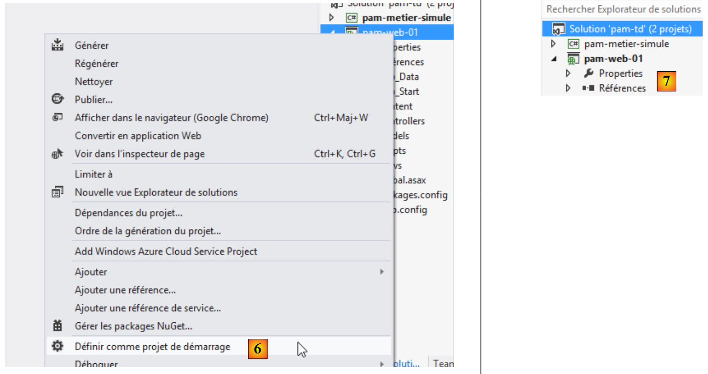 |
- en [6], on fait du nouveau projet, le projet de démarrage de la solution, celui qui sera exécuté lorsqu'on fera [Ctrl-F5] ;
- en [7], le nom du nouveau projet est passé en gras, indiquant qu'il est le projet de démarrage de la solution.
Maintenant, on remplace avec l'explorateur Windows le dossier [Content] du projet par le dossier [étudedecas-support / web / Content]. Ceci fait, il faut inclure les nouveaux fichiers dans le projet [pam-web-01]. On procèdera ainsi :
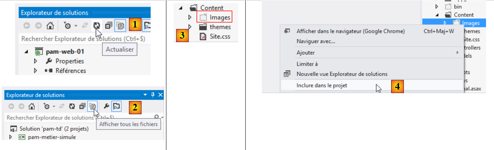 |
- en [1], on rafraîchit la solution ;
- en [2], on fait afficher tous les fichiers de la solution ;
- en [3], apparaît un dossier [Images] ;
- qu'on inclut dans le projet en [4].
Dans le dossier [Scripts], ajoutez les scripts JQuery Globalization [1] nécessaires à la validation côté client.
 |
La page maître [_Layout.cshtml] [2] aura le contenu suivant :
<!DOCTYPE html>
<html>
<head>
<title>@ViewBag.Title</title>
<meta charset="utf-8" />
<meta name="viewport" content="width=device-width" />
<link rel="stylesheet" href="~/Content/Site.css" />
<script type="text/javascript" src="~/Scripts/jquery-1.8.2.min.js"></script>
<script type="text/javascript" src="~/Scripts/jquery.validate.min.js"></script>
<script type="text/javascript" src="~/Scripts/jquery.validate.unobtrusive.min.js"></script>
<script type="text/javascript" src="~/Scripts/globalize/globalize.js"></script>
<script type="text/javascript" src="~/Scripts/globalize/cultures/globalize.culture.fr-FR.js"></script>
<script type="text/javascript" src="~/Scripts/jquery.unobtrusive-ajax.js"></script>
<script type="text/javascript" src="~/Scripts/myScripts.js"></script>
</head>
<body>
<table>
<tbody>
<tr>
<td>
<h2>Simulateur de calcul de paie</h2>
</td>
<td style="width: 20px">
<img id="loading" style="display: none" src="~/Content/images/indicator.gif" />
</td>
<td>
<a id="lnkFaireSimulation" href="javascript:faireSimulation()">| Faire la simulation<br />
</a>
<a id="lnkEffacerSimulation" href="javascript:effacerSimulation()">| Effacer la simulation<br />
</a>
<a id="lnkVoirSimulations" href="javascript:voirSimulations()">| Voir les simulations<br />
</a>
<a id="lnkRetourFormulaire" href="javascript:retourFormulaire()">| Retour au formulaire de simulation<br />
</a>
<a id="lnkEnregistrerSimulation" href="javascript:enregistrerSimulation()">| Enregistrer la simulation<br />
</a>
<a id="lnkTerminerSession" href="javascript:terminerSession()">| Terminer la session<br />
</a>
</td>
</tbody>
</table>
<hr />
<div id="content">
@RenderBody()
</div>
</body>
</html>
Note : ligne 8, adaptez la version de jQuery à celle de votre version de Visual Studio.
- ligne 7 : référence sur la feuille de style de l'application ;
- lignes 8-10 : références sur les scripts nécessaires à la validation côté client ;
- lignes 11-12 : références sur les scripts nécessaires à la saisie des nombres réels français avec virgule ;
- ligne 13 : référence sur les scripts nécessaires au mode Ajax ;
- ligne 14 : les scripts propres à l'application ;
- ligne 24 : l'image d'attente de fin des appels Ajax ;
- lignes 26-39 : six liens Javascript ;
- ligne 43 : la section où viendront s'afficher les différentes vues de l'application ;
- ligne 44 : le corps des différentes vues de l'application.
Ensuite, on modifiera la route par défaut de l'application :
 |
Le fichier [RouteConfig] aura le contenu suivant :
using System.Web.Mvc;
using System.Web.Routing;
namespace pam_web_01
{
public class RouteConfig
{
public static void RegisterRoutes(RouteCollection routes)
{
routes.IgnoreRoute("{resource}.axd/{*pathInfo}");
routes.MapRoute(
name: "Default",
url: "{controller}/{action}",
defaults: new { controller = "Pam", action = "Index" }
);
}
}
}
- ligne 14 : les URL auront la forme [{controller}/{action}] ;
- ligne 15 : en l'absence d'action, c'est l'action [Index] qui sera utilisée. En l'absence de contrôleur, c'est le contrôleur [Pam] qui sera utilisé.
De cette configuration, il résulte que l'URL [/] est équivalente à l'URL [/Pam/Index]. Comme notre application est de type APU, l'URL [/] sera l'unique URL de celle-ci.
Créez le contrôleur [Pam] :
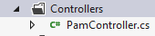 |
Modifiez le contrôleur [PamController] de la façon suivante :
using System.Web.Mvc;
namespace Pam.Web.Controllers
{
public class PamController : Controller
{
[HttpGet]
public ViewResult Index()
{
return View();
}
}
}
- ligne 3 : nous mettons le contrôleur dans l'espace de noms [Pam.Web.Controllers] ;
- ligne 7 : l'action [Index] traitera uniquement la commande HTTP GET ;
- ligne 8 : on rend un type [ViewResult] plutôt qu'un type [ActionResult].
Créez maintenant la vue [Index.cshtml] affichée par l'action [Index] ci-dessus :
 |
Modifiez [Index.cshtml] de la façon suivante :
@{
ViewBag.Title = "Pam";
}
<h2>Formulaire</h2>
Exécutez l'application par [Ctrl-F5]. Vous devez obtenir la page suivante :
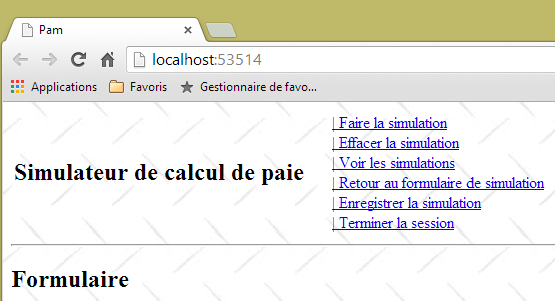 |
Travail : Expliquez ce qui s'est passé.
L'application utilise une feuille de style référencée dans la page maître [_Layout.cshtml] :
<link rel="stylesheet" href="~/Content/Site.css" />
La feuille de style [/Content/Site.css] définit une image de fond pour les pages de l'application :
body {
background-image: url("/Content/Images/standard.jpg");
}
 |
9.9. Étape 3 : mise en place du modèle APU
Nous voulons écrire une application suivant le modèle APU (Application à Page Unique) décrit au paragraphe 7.5, ainsi qu'au paragraphe 7.6. La page unique est celle chargée par le navigateur au démarrage de l'application :
 |
- la partie [1] ci-dessus est la partie fixe de la page unique. Nous avons vu qu'elle était fournie par la page maître [_Layout.cshtml] ;
- la partie [2] est la partie variable de la page unique. Elle s'inscrit dans la région d'id [content] de la page maître [_Layout.cshtml] :
<!DOCTYPE html>
<html>
<head>
<title>@ViewBag.Title</title>
...
<script type="text/javascript" src="~/Scripts/myScripts.js"></script>
</head>
<body>
<table>
...
</table>
<hr />
<div id="content">
@RenderBody()
</div>
</body>
</html>
Les différents fragments de page de l'application vont venir s'afficher dans la région d'id [content] de la ligne 13. Ils seront affichés via des appels Ajax. Les scripts Javascript exécutant ces appels sont dans la fichier [myScripts.js] référencé ligne 6. Créez ce fichier dont nous allons avoir besoin :
 |
Nous suivons désormais le modèle APU décrit au paragraphe 7.6. Relisez ce paragraphe si vous l'avez oublié. Nous allons maintenant mettre en place les différents fragments de page affichés par l'application.
9.9.1. Les outils du développeur Javascript
Nous rappelons qu'avec le navigateur Chrome, vous disposez d'une palette d'outils pour déboguer le HTML, CSS, Javascript de vos pages. Ces outils ont été présentés partiellement au paragraphe 7.2. Dans le modèle APU, les navigateurs gardent en cache les scripts Javascript référencés par la première page de l'application. Aussi, faut-il penser à vider ce cache lorsque vous modifiez vos scripts, sinon les modifications peuvent ne pas être prises en compte. Voici comment faire avec Chrome :
- faire [Ctrl-Maj-I] pour afficher l'environnement de développement
 |
- cliquer sur l'icône [1] en bas à droite de la fenêtre de développement ;
- puis cocher l'option [2] qui inhibe le cache en mode développement.
9.9.2. Utilisation d'une vue partielle pour afficher le formulaire
Le formulaire de saisie est l'un des fragments affichés par l'application. Pour l'instant ce formulaire est affiché par la vue [Index.cshtml] qui est une vue complète :
@{
ViewBag.Title = "Pam";
}
<h2>Formulaire</h2>
Cette vue est affichée par l'action [Index] :
[HttpGet]
public ViewResult Index()
{
return View();
}
Ligne 4 ci-dessus, c'est bien une vue [View] et non une vue partielle [PartialView] qui est affichée. Nous avons besoin d'une vue partielle pour le formulaire qui sera un fragment de page. Nous faisons évoluer la vue [Index.cshtml] de la façon suivante :
@{
ViewBag.Title = "Pam";
}
@Html.Partial("Formulaire")
Ligne 4, le formulaire ne fait plus partie de la page [Index.cshtml]. Il est désormais logé dans une vue partielle [Formulaire.cshtml] :
 |
Le code de [Formulaire.cshtml] est simplement le suivant :
<h2>Formulaire</h2>
Faites ces modifications et vérifiez que vous obtenez toujours la vue suivante au démarrage de l'application :
 |
9.9.3. L'appel Ajax [faireSimulation]
Nous nous intéressons au fragment affiché lorsque l'utilisateur clique sur le lien [Faire la simulation] :
 |
- en [1], l'utilisateur clique sur le lien [Faire la simulation] ;
- en [2], la simulation apparaît sous le formulaire.
Nous faisons évoluer de la façon suivante la vue partielle [Formulaire.cshtml] qui affiche le formulaire :
<h2>Formulaire</h2>
<div id="simulation" />
Ligne 3, nous créons une région d'id [simulation] pour loger le fragment de la simulation.
Nous créons la vue partielle [Simulation.cshtml] suivante :
 |
Le contenu de la vue [Simulation.cshtml] est le suivant :
<hr />
<h2>Simulation</h2>
Il nous faut maintenant écrire le code Javascript qui gère le clic sur le lien [Faire la simulation]. Nous allons suivre la démarche exposée au paragraphe 7.6.5. Tout d'abord, regardons le code HTML du lien dans [_Layout.cshtml] :
<a id="lnkFaireSimulation" href="javascript:faireSimulation()">| Faire la simulation<br />
</a>
On voit qu'un clic sur le lien [Faire la simulation] va lancer l'exécution de la fonction JS [faireSimulation]. Cette fonction va être écrite dans le fichier [myScripts.js] ainsi que les autres fonctions JS nécessaires à l'application :
// variables globales
var loading;
var content;
function faireSimulation() {
// on fait un appel Ajax à la main
...
}
function effacerSimulation() {
// on efface les saisies du formulaire
...
}
function enregistrerSimulation() {
// on fait un appel Ajax à la main
...
}
function voirSimulations() {
// on fait un appel Ajax à la main
...
}
function retourFormulaire() {
// on fait un appel Ajax à la main
...
}
function terminerSession() {
...
}
// au chargement du document
$(document).ready(function () {
// on récupère les références des différents composants de la page
loading = $("#loading");
content = $("#content");
});
- lignes 35-39 : la fonction JQuery exécutée au démarrage de l'application ;
- lignes 37-38 : on initialise les variables globales des lignes 2 et 3.
On rappelle que les éléments d'id [loading] et [content] sont définis dans la page maître [_Layout.cshtml] (lignes 14 et 21 ci-dessous) :
<!DOCTYPE html>
<html>
<head>
...
</head>
<body>
<table>
<tbody>
<tr>
<td>
<h2>Simulateur de calcul de paie</h2>
</td>
<td style="width: 20px">
<img id="loading" style="display: none" src="~/Content/images/indicator.gif" />
</td>
...
</td>
</tbody>
</table>
<hr />
<div id="content">
@RenderBody()
</div>
</body>
</html>
Travail : en suivant la démarche exposée au paragraphe 7.6.5 écrivez la fonction JS [faireSimulation]. Celle-ci émettra un appel Ajax de type POST vers l'action [/Pam/FaireSimulation]. Il n'y aura pas de données postées pour l'instant. L'action [/Pam/FaireSimulation] renverra la vue partielle [Simulation.cshtml] à la fonction JS [faireSimulation] qui placera alors ce flux HTML dans la région d'id [simulation] du formulaire.
Testez le lien [Faire la simulation] de votre application.
9.9.4. L'appel Ajax [enregistrerSimulation]
Le lien [Enregistrer la simulation] est défini de la façon suivante dans [_Layout.cshtml] :
<a id="lnkEnregistrerSimulation" href="javascript:enregistrerSimulation()">| Enregistrer la simulation<br />
</a>
Travail : en suivant la démarche précédente, écrivez la fonction JS [enregistrerSimulation]. Celle-ci émettra un appel Ajax de type POST vers l'action [/Pam/EnregistrerSimulation]. Il n'y aura pas de données postées pour l'instant. L'action [/Pam/EnregistrerSimulation] renverra la vue partielle [Simulations.cshtml] à la fonction JS [enregistrerSimulation] qui placera alors ce flux HTML dans la région d'id [content] de la page maître.
La vue [Simulations.cshtml] est la suivante :
 |
Son contenu est le suivant :
<h2>Simulations</h2>
Voici un exemple d'exécution :
 |  |
9.9.5. L'appel Ajax [voirSimulations]
Le lien [Voir les simulations] est défini de la façon suivante dans [_Layout.cshtml] :
<a id="lnkVoirSimulations" href="javascript:voirSimulations()">| Voir les simulations<br />
</a>
Travail : en suivant la démarche précédente, écrivez la fonction JS [voirSimulations]. Celle-ci émettra un appel Ajax de type POST vers l'action [/Pam/VoirSimulations]. Il n'y aura pas de données postées pour l'instant. L'action [/Pam/VoirSimulations] renverra la vue partielle [Simulations.cshtml] à la fonction JS [voirSimulations] qui placera alors ce flux HTML dans la région d'id [content] de la page maître.
La vue [Simulations.cshtml] est celle déjà utilisée dans la question précédente.
Voici un exemple d'exécution :
 |
9.9.6. L'appel Ajax [retourFormulaire]
Le lien [Retour au formulaire de simulation] est défini de la façon suivante dans [_Layout.cshtml] :
<a id="lnkRetourFormulaire" href="javascript:retourFormulaire()">| Retour au formulaire de simulation<br />
</a>
Travail : en suivant la démarche précédente, écrivez la fonction JS [retourFormulaire]. Celle-ci émettra un appel Ajax de type POST vers l'action [/Pam/Formulaire]. Il n'y aura pas de données postées pour l'instant. L'action [/Pam/Formulaire] renverra la vue partielle [Formulaire.cshtml] à la fonction JS [retourFormulaire] qui placera alors ce flux HTML dans la région d'id [content] de la page maître.
La vue [Formulaire .cshtml] a déjà été définie. Voici un exemple d'exécution :
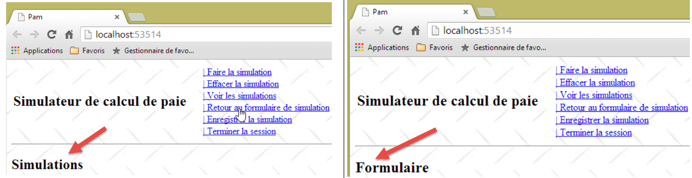 |
9.9.7. L'appel Ajax [terminerSession]
Le lien [Terminer la session] est défini de la façon suivante dans [_Layout.cshtml] :
<a id="lnkTerminerSession" href="javascript:terminerSession()">| Terminer la session<br />
</a>
Travail : en suivant la démarche précédente, écrivez la fonction JS [terminerSession]. Celle-ci émettra un appel Ajax de type POST vers l'action [/Pam/TerminerSession]. Il n'y aura pas de données postées pour l'instant. L'action [/Pam/TerminerSession] renverra la vue partielle [Formulaire.cshtml] à la fonction JS [terminerSession] qui placera alors ce flux HTML dans la région d'id [content] de la page maître.
Voici un exemple d'exécution :
 |
9.9.8. La fonction JS [effacerSimulation]
Le lien [Effacer la simulation] est défini de la façon suivante dans [_Layout.cshtml] :
<a id="lnkEffacerSimulation" href="javascript:effacerSimulation()">| Effacer la simulation<br />
</a>
La fonction JS [effacerSimulation] a pour but :
- de cacher le fragment [Simulation] s'il existe ;
- de remettre les champs de saisie du formulaire dans l'état où ils étaient au chargement initial de l'application (lorsqu'il y aura des champs de saisie - pour l'instant il n'y en a pas).
Travail : écrivez la fonction JS [effacerSimulation]. Il n'y a pas ici d'appel Ajax. Ce qui se passe est interne au navigateur et n'implique pas le serveur.
Voici un exemple d'exécution :
 |
9.9.9. Gestion de la navigation entre écrans
Pour l'instant, les liens sont toujours affichés. Nous allons maintenant gérer leur affichage avec une fonction Javascript. Rappelons tout d'abord le code des six liens Javascript dans [_Layout.cshtml] :
<a id="lnkFaireSimulation" href="javascript:faireSimulation()">| Faire la simulation<br />
</a>
<a id="lnkEffacerSimulation" href="javascript:effacerSimulation()">| Effacer la simulation<br />
</a>
<a id="lnkVoirSimulations" href="javascript:voirSimulations()">| Voir les simulations<br />
</a>
<a id="lnkRetourFormulaire" href="javascript:retourFormulaire()">| Retour au formulaire de simulation<br />
</a>
<a id="lnkEnregistrerSimulation" href="javascript:enregistrerSimulation()">| Enregistrer la simulation<br />
</a>
<a id="lnkTerminerSession" href="javascript:terminerSession()">| Terminer la session<br />
</a>
Tous les liens ont un attribut [id] qui va nous permettre de les gérer en Javascript. Nous modifions la méthode JS exécutée au chargement de la page de la façon suivante :
// variables globales
var loading;
var content;
var lnkFaireSimulation;
var lnkEffacerSimulation
var lnkEnregistrerSimulation;
var lnkTerminerSession;
var lnkVoirSimulations;
var lnkRetourFormulaire;
var options;
...
// au chargement du document
$(document).ready(function () {
// on récupère les références des différents composants de la page
loading = $("#loading");
content = $("#content");
// les liens du menu
lnkFaireSimulation = $("#lnkFaireSimulation");
lnkEffacerSimulation = $("#lnkEffacerSimulation");
lnkEnregistrerSimulation = $("#lnkEnregistrerSimulation");
lnkVoirSimulations = $("#lnkVoirSimulations");
lnkTerminerSession = $("#lnkTerminerSession");
lnkRetourFormulaire = $("#lnkRetourFormulaire");
// on les met dans un tableau
options = [lnkFaireSimulation, lnkEffacerSimulation, lnkEnregistrerSimulation, lnkVoirSimulations, lnkTerminerSession, lnkRetourFormulaire];
// on cache certains éléments de la page
loading.hide();
// on fixe le menu
setMenu([lnkFaireSimulation, lnkVoirSimulations, lnkTerminerSession]);
});
- lignes 19-24 : on récupère les références sur les six liens. Ces références sont définies en variables globales aux lignes 4-9 ;
- ligne 26 : le tableau [options] est initialisé avec les six références. Ce tableau est défini en variable globale ligne 10 ;
- ligne 28 : on cache l'image animée de l'attente de fin des appels Ajax ;
- ligne 30 : on affiche les liens [lnkFaireSimulation, lnkVoirSimulations, lnkTerminerSession]. Les autres seront cachés.
La fonction JS [setMenu] est la suivante :
function setMenu(show) {
// on affiche les liens du tableau [show]
...
}
Travail : écrire la fonction JS [setMenu].
Si T est un tableau de liens :
- T.length est le nombre de liens ;
- T[i] est le lien n° i ;
- T[i].show() affiche le lien n° i ;
- T[i].hide() cache le lien n° i.
Avec ces nouvelles fonctions JS, la page affichée au démarrage est la suivante :
 |
Adaptez les fonctions JS [faireSimulation, effacerSimulation, enregistrerSimulation, voirSimulations, retourFormulaire, terminerSession] afin d'avoir les écrans suivants :
 |  |
 |  |
 |  |
 |  |
 |  |
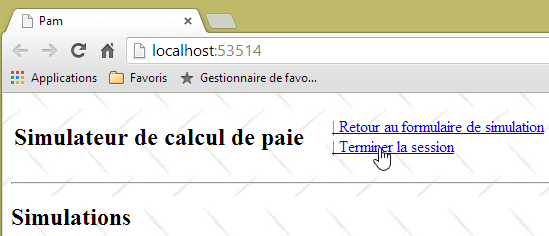 | 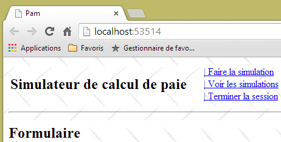 |
Maintenant que le modèle APU et les liens de navigation sont en place, nous pouvons passer à l'écriture des actions et des vues côté serveur. Au fil des étapes, vous allez découvrir que certains des liens Ajax qui fonctionnent maintenant ne fonctionnent plus, ceci parce que vous allez modifier les vues partielles envoyées au client. Au fur et à mesure que vous allez construire les différentes actions et vues côté serveur, les liens Ajax côté client vont retrouver le fonctionnement que vous leur avez donné.
9.10. Étape 4 : écriture de l'action serveur [Index]
Actuellement au démarrage de l'application, nous avons l'écran suivant :
Au lieu d'avoir cet écran, nous voudrions avoir le suivant :
 |
C'est l'action [Index] qui doit produire cette page. Faisons quelques remarques :
- la page présente un formulaire avec trois champs de saisie :
- l'employé dont on calcule le salaire,
- son nombre d'heures travaillées,
- son nombre de jours travaillés ;
- le formulaire est posté par le lien [Faire la simulation] ;
- la validité des champs de saisie [Heures travaillées] et [Jours travaillés] doit être vérifiée ;
- la liste des employés vient de la couche [métier] que nous avons construite précédemment.
Rappelons le code actuel de l'action [Index] :
[HttpGet]
public ViewResult Index()
{
return View();
}
celui de la vue [Index.cshtml] que cette action affiche :
@{
ViewBag.Title = "Pam";
}
@Html.Partial("Formulaire")
et celui de la vue partielle [Formulaire.cshtml] :
<h2>Formulaire</h2>
Des modifications vont avoir lieu dans ces trois endroits.
9.10.1. Le modèle du formulaire
Revenons à la chaîne de traitement de l'URL [/Pam/Index] :
 |
- la requête HTTP du client arrive en [1] ;
- en [2], les informations contenues dans la requête vont être transformées en modèle d'action [3] qui servira d'entrée à l'action [4] ;
- en [4], l'action, à partir de ce modèle, va générer une réponse. Celle-ci aura deux composantes : une vue V [6] et le modèle M de cette vue [5] ;
- la vue V [6] va utiliser son modèle M [5] pour générer la réponse HTTP destinée au client.
L'action à laquelle nous nous intéressons est l'action [Index] qui pour l'instant est la suivante :
[HttpGet]
public ViewResult Index()
{
return View();
}
L'action [Index] ne passe aucun modèle à la vue [Index.cshtml]. Celle-ci ne pourra donc pas afficher la liste des employés. Celle-ci peut être demandée à la couche [métier]. Pour cela, il faut que le projet [pam-web-01] ait une référence sur le projet [pam-metier-simule]. Nous créons cette référence maintenant :
 |
- en [1], clic droit sur [References] du projet [pam-web-01] puis [Ajouter une référence] ;
- en [2], sélectionner l'option [Solution] puis le projet [pam-metier-simule] en [3] ;
- en [4], le projet [pam-metier-simule] a été ajouté aux références du projet [pam-web-01].
9.10.2. Le modèle de l'application
Nous avons introduit les notions importantes de modèle d'application et de modèle de session au paragraphe 4.10, page 78. Nous allons les utiliser maintenant. On rappelle qu'on met dans le modèle :
- d'application des données en lecture seule pour tous les utilisateurs. Ce modèle constitue une mémoire partagée par toutes les requêtes de tous les utilisateurs ;
- de session des données en lecture et écriture pour un utilisateur donné. Ce modèle constitue une mémoire partagée par toutes les requêtes de cet utilisateur.
Qu'allons-nous mettre dans le modèle d'application ? Revenons à l'architecture de celle-ci :
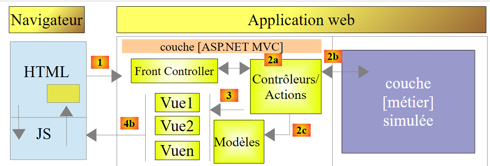 |
La couche [web] détient une référence sur la couche [métier]. Celle-ci peut être partagée par tous les utilisateurs. On peut donc la mettre dans le modèle de l'application. Par ailleurs, nous allons faire l'hypothèse que la liste des employés ne change pas. Elle peut donc être lue une unique fois puis partagée entre tous les utilisateurs. Nous proposons alors le modèle d'application suivant :
 |
Le code de la classe [ApplicationModel] pourrait être le suivant :
using Pam.Metier.Entites;
using Pam.Metier.Service;
namespace PamWeb.Models
{
public class ApplicationModel
{
// --- données de portée application ---
public Employe[] Employes { get; set; }
public IPamMetier PamMetier { get; set; }
}
}
Pour afficher une liste déroulante dans une vue, on écrit quelque chose comme suit :
<!-- la liste déroulante -->
<tr>
<td>Liste déroulante</td>
<td>@Html.DropDownListFor(m => m.DropDownListField,
new SelectList(@Model.DropDownListFieldItems, "Value", "Label"))
</td>
</tr>
La méthode [DropDownListFor] attend pour second paramètre un type SelectListItem[] qui avait été fourni ci-dessus par un type [SelectList]. Il nous faut construire un tel tableau avec la liste des employés. Puisque les employés ne changent pas, ce tableau peut lui aussi être placé dans le modèle de l'application. Nous faisons évoluer celui-ci comme suit :
using Pam.Metier.Entites;
using Pam.Metier.Service;
using System.Web.Mvc;
namespace Pam.Web.Models
{
public class ApplicationModel
{
// --- données de portée application ---
public Employe[] Employes { get; set; }
public IPamMetier PamMetier { get; set; }
public SelectListItem[] EmployesItems { get; set; }
}
}
A quel moment ce modèle doit-il être construit ? Nous l'avons montré au paragraphe 4.10. C'est lors de l'exécution de la méthode [Application_Start] du fichier [Global.asax] :
 |
La méthode [Application_Start] est pour l'instant la suivante :
using System.Web.Http;
using System.Web.Mvc;
using System.Web.Optimization;
using System.Web.Routing;
namespace pam_web_01
{
public class MvcApplication : System.Web.HttpApplication
{
protected void Application_Start()
{
AreaRegistration.RegisterAllAreas();
WebApiConfig.Register(GlobalConfiguration.Configuration);
FilterConfig.RegisterGlobalFilters(GlobalFilters.Filters);
RouteConfig.RegisterRoutes(RouteTable.Routes);
BundleConfig.RegisterBundles(BundleTable.Bundles);
}
}
}
Nous la faisons évoluer comme suit :
using Pam.Metier.Entites;
using Pam.Metier.Service;
using PamWeb.Infrastructure;
using PamWeb.Models;
using System.Web.Http;
using System.Web.Mvc;
using System.Web.Optimization;
using System.Web.Routing;
namespace pam_web_01
{
public class MvcApplication : System.Web.HttpApplication
{
protected void Application_Start()
{
// ----------Auto-généré
AreaRegistration.RegisterAllAreas();
WebApiConfig.Register(GlobalConfiguration.Configuration);
FilterConfig.RegisterGlobalFilters(GlobalFilters.Filters);
RouteConfig.RegisterRoutes(RouteTable.Routes);
BundleConfig.RegisterBundles(BundleTable.Bundles);
// -------------------------------------------------------------------
// ---------- configuration spécifique
// -------------------------------------------------------------------
// données de portée application
ApplicationModel application = new ApplicationModel();
Application["data"] = application;
// instanciation couche [métier]
application.PamMetier = ...
// tableau des employés
application.Employes = ...
// éléments du combo des employés
application.EmployesItems = ...
// model binder pour [ApplicationModel]
...
}
}
}
Travail : compléter le code de la méthode [Application_Start]. Tout ce dont vous avez besoin se trouve au paragraphe 4.10. Prenez le temps de relire ce paragraphe long mais important.
La ligne 33 comporte en fait plusieurs lignes. Pour construire un objet de type [SelectListItem] vous pouvez utiliser la méthode suivante :
new SelectListItem() { Text = unTexte, Value = uneValeur };
Ce [SelectListItem] servira à générer la balise HTML <option> suivante :
de la liste déroulante. On fera en sorte que :
- unTexte soit le prénom suivi du nom de l'employé ;
- uneValeur soit le n° SS de l'employé.
Ligne 35, ci-dessus, vous aurez besoin de la classe [ApplicationModelBinder] décrite au paragraphe 4.10, page 82 :
 |
9.10.3. Le code de l'action [Index]
Maintenant que nous avons défini un modèle pour l'application, nous pouvons faire évoluer le code de l'action [Index] de la façon suivante :
[HttpGet]
public ViewResult Index(ApplicationModel application)
{
return View();
}
- ligne 4 : le modèle de l'application est désormais un paramètre de l'action [Index]. Nous avons expliqué au paragraphe 4.10, comment ce paramètre était initialisé par le framework.
9.10.4. Le modèle de la vue [Index.cshtml]
Maintenant, l'action [Index] a accès aux employés qui sont enregistrés dans le modèle de l'application. Il faut maintenant qu'elle les passe à la vue [Index.cshtml] qu'elle va afficher. On pourrait passer un type [ApplicationModel] comme modèle de la vue [Index.cshtml] mais nous verrons rapidement que cette vue a besoin d'autres informations qui ne sont pas dans [ApplicationModel]. Nous allons utiliser le modèle de vue [IndexModel] suivant :
 |
namespace Pam.Web.Models
{
public class IndexModel
{
// données de portée application
public ApplicationModel Application { get; set; }
}
}
- ligne 6 : [IndexModel] embarque le modèle de l'application.
L'action [Index] devient la suivante :
[HttpGet]
public ViewResult Index(ApplicationModel application)
{
return View(new IndexModel() { Application = application });
}
- ligne 4, la vue par défaut [Index.cshtml] est affichée avec comme modèle un type [IndexModel] initialisé avec les données du modèle d'application.
Nous savons que la vue [Index.cshtml] doit afficher un formulaire :
Revenons à la chaîne de traitement d'une requête :
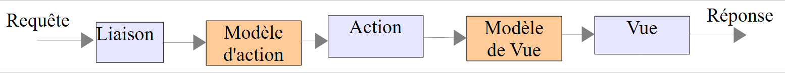 |
Pour la requête [GET /Pam/Index] :
- l'action est [Index] ;
- le modèle de cette action est [ApplicationModel] ;
- la vue est [Index.cshtml] ;
- le modèle de cette vue est [IndexModel].
Lorsque le formulaire va être posté on aura une chaîne de traitement analogue :
- l'action est celle qui traite le POST ;
- son modèle rassemble les valeurs postées, ici :
- le n° SS de l'employé sélectionné ;
- le nombre d'heures travaillées ;
- le nombre de jours travaillés ;
On pourrait créer un modèle d'action rassemblant ces trois valeurs. Il est également fréquent de réutiliser le modèle qui a servi à afficher le formulaire. C'est ce que nous allons faire ici. La classe [IndexModel] évolue comme suit :
using System.ComponentModel.DataAnnotations;
using System.Web.Mvc;
namespace Pam.Web.Models
{
[Bind(Exclude = "Application")]
public class IndexModel
{
// données de portée application
public ApplicationModel Application { get; set; }
// valeurs postées
[Display(Name = "Employé")]
public string SS { get; set; }
[Display(Name = "Heures travaillées")]
[UIHint("Decimal")]
public double HeuresTravaillées { get; set; }
[Display(Name = "Jours travaillés")]
public double JoursTravaillés { get; set; }
}
}
- lignes 13, 16, 18 : les trois valeurs postées. On notera que [joursTravaillés] a été déclaré de type [double] alors qu'en réalité on attend un entier. Le type [double] a été introduit pour faciliter la validation de ce champ côté client, la validation d'un type [int] ayant posé problème ;
- lignes 12, 14, 17 : des libellés pour les méthodes [Html.LabelFor] de la vue associée au modèle ;
- ligne 15 : une annotation pour avoir un affichage du champ [HeuresTravaillées] avec deux décimales ;
- ligne 5 : on indique que la propriété nommée [Application] ne fait pas partie des valeurs postées.
9.10.5. Les vues [Index.cshtml] et [Formulaire.cshtml]
La vue [Index.cshtml] est affichée par l'action [Index] suivante :
[HttpGet]
public ViewResult Index(ApplicationModel application)
{
return View(new IndexModel() { Application = application });
}
De façon intéressante, la vue [Index.cshtml] reste inchangée :
@{
ViewBag.Title = "Pam";
}
@Html.Partial("Formulaire")
- la vue ne déclare aucun modèle ;
- ligne 4 : elle intègre la vue partielle [Formulaire.cshtml], là encore sans passer à celle-ci de modèle. Au cours des tests, il a été constaté que le modèle [IndexModel] passé à la vue [Index.cshtml] se propageait implicitement à la vue partielle [Formulaire.cshtml]. Cette dernière vue pourrait maintenant avoir la forme suivante :
@model Pam.Web.Models.IndexModel
@using (Html.BeginForm("FaireSimulation", "Pam", FormMethod.Post, new { id = "formulaire" }))
{
<table>
<thead>
<tr>
...
</tr>
</thead>
<tbody>
<tr>
...
</tr>
<tr>
...
</tr>
</tbody>
</table>
}
<div id="simulation" />
- ligne 1 : la vue reçoit un modèle de type [IndexModel] ;
- ligne 3 : le formulaire ;
- lignes 6-10 : les entêtes du tableau des saisies ;
- lignes 12-14 : la ligne des saisies ;
- lignes 15-17 : les éventuels messages d'erreur.
Travail : compléter le code de la vue [Formulaire.cshtml]. On utilisera les méthodes [DropDownListFor, EditorFor, LabelFor, ValidationMessageFor] décrites au paragraphe 5.7.
9.10.6. Test de l'action [Index]
Nous avons écrit tous les éléments de la chaîne de traitement de l'URL [/Pam/Index] :
 |
Nous testons l'application avec [Ctrl-F5] :
 |  |
Vous devez vérifier que votre liste déroulante a bien été remplie avec la liste des employés que nous avions définie dans la couche [métier] simulée.
9.11. Étape 5 : mise en place de la validation des saisies
9.11.1. Le problème
Bien que nous n'ayons rien fait pour cela, des validations côté client sont déjà à l’œuvre :
 |
 |
La validation côté client est à l'oeuvre par défaut à cause de la ligne 3 ci-dessous dans le fichier [Web.config] de l'application.
<appSettings>
...
<add key="ClientValidationEnabled" value="true" />
</appSettings>
Cependant parce que dans [IndexModel], on a déclaré le champ [JoursTravaillés] de type [double] :
public double JoursTravaillés { get; set; }
on peut saisir un nombre réel dans ce champ :
 |
Par ailleurs, on peut entrer des valeurs fantaisistes dans les deux champs :
 |
Le modèle [IndexModel] du formulaire est actuellement le suivant :
using System.ComponentModel.DataAnnotations;
using System.Web.Mvc;
namespace Pam.Web.Models
{
[Bind(Exclude = "Application")]
public class IndexModel
{
// données de portée application
public ApplicationModel Application { get; set; }
// valeurs postées
[Display(Name = "Employé")]
public string SS { get; set; }
[Display(Name = "Heures travaillées")]
[UIHint("Decimal")]
public double HeuresTravaillées { get; set; }
[Display(Name = "Jours travaillés")]
public double JoursTravaillés { get; set; }
}
}
Travail : améliorez ce modèle pour :
- avoir des messages d'erreur personnalisés ;
- n'accepter que des valeurs réelles dans l'intervalle [0,400] pour le champ [HeuresTravaillées] ;
- n'accepter que des valeurs entières dans l'intervalle [0,31] pour le champ [JoursTravaillées] ;
On pourra s'aider de l'exemple du paragraphe 7.6.2. Pour vérifier que le nombre de jours travaillés est un entier, on pourra utiliser une expression régulière (cf exemples du paragraphe 5.9.1).
Voici des exemples de ce qui est attendu :
 |
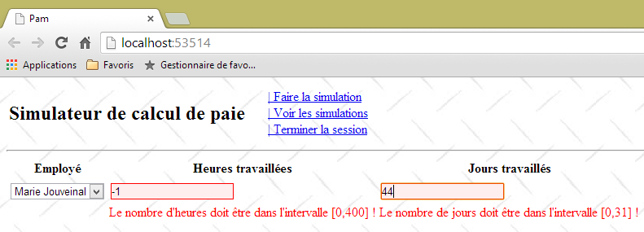 |
 |
9.11.2. Saisie des nombres réels au format français
Dans la version actuelle de l'application, le nombre d'heures travaillées doit être un nombre décimal au format anglo-saxon (avec le point décimal). Le format français avec la virgule n'est pas accepté :
 |
Ce problème a été identifié et traité au paragraphe 6.1.
Travail : en suivant la démarche du paragraphe sus-nommé, faites les modifications nécessaires pour qu'on puisse saisir les nombres réels avec le format décimal français. Testez votre application.
Maintenant, l'écran précédent devient :
 |
9.11.3. Validation du formulaire par le lien Javascript [Faire la simulation]
Actuellement, on peut poster des valeurs invalides comme le montre la séquence suivante :
 |
 |
La présence de la simulation en [1] et le changement de menu en [2] montrent que le clic sur le lien [Faire la simulation] a posté le formulaire alors même que les valeurs saisies étaient invalides. Ce problème a été identifié et traité au paragraphe 7.6.5.
Travail : en suivant la démarche exposée au paragraphe sus-nommé, faites en sorte que le POST du lien [Faire la simulation] ne puisse se faire si les valeurs saisies sont invalides. Pensez à vider le cache du navigateur avant de tester vos modifications.
On rappelle que la vue partielle [Formulaire.cshtml] génère un formulaire HTML d'id [formulaire] (ligne 1 ci-dessous) :
@using (Html.BeginForm("FaireSimulation", "Pam", FormMethod.Post, new { id = "formulaire" }))
{
...
}
Cela peut se vérifier en affichant le code source du formulaire dans le navigateur :
<div id="content">
<form action="/Pam/FaireSimulation" id="formulaire" method="post">
...
</form>
<div id="simulation" />
</div>
9.12. Étape 6 : faire une simulation
9.12.1. Le problème
Lorsque nous faisons une simulation, nous voulons obtenir le résultat suivant :
 |
La vue partielle [Simulation.cshtml] affiche désormais la feuille de salaire d'un employé.
9.12.2. Écriture de la vue [Simulation.cshtml]
La vue [Simulation.cshtml] évolue comme suit :
@model Pam.Metier.Entites.FeuilleSalaire
<hr />
<p><span class="info">Informations Employé</span></p>
<table>
<tbody>
<tr>
<td><span class="libellé">Nom</span>
</td>
<td><span class="libellé">Prénom</span>
</td>
<td><span class="libellé">Adresse</span>
</td>
</tr>
<tr>
<td>
<span class="valeur">@Model.Employe.Nom</span>
</td>
...
</tr>
<tr>
<td><span class="libellé">Ville</span>
</td>
<td><span class="libellé">Code Postal</span>
</td>
<td><span class="libellé">Indice</span>
</td>
</tr>
<tr>
...
</tr>
</tbody>
</table>
<br />
<p><span class="info">Informations Cotisations</span></p>
<table>
...
</tbody>
</table>
<br />
<p><span class="info">Informations Indemnités</span></p>
<table>
...
</table>
<br />
<p><span class="info">Informations Salaire</span></p>
<table>
...
</table>
<br />
<table>
...
</table>
- ligne 1 : la vue [Simulation.cshtml] a pour modèle le type [FeuilleSalaire] défini au paragraphe 9.7.3 ;
- la vue utilise les classes [libellé, info, valeur] définies dans la feuille de style de l'application [Content / Site.css] :
.libellé {
background-color: azure;
margin: 5px;
padding: 5px;
}
.info {
background-color: antiquewhite;
margin: 5px;
padding: 5px;
}
.valeur {
background-color: beige;
padding: 5px;
margin: 5px;
}
Par ailleurs, toujours dans [Site.css], on fixe la hauteur des lignes des différentes tables HTML de la région d'id [simulation], précisément là où est affichée la feuille de salaire :
#simulation table tr {
height: 30px;
}
Travail : complétez la vue [Simulation.cshtml].
Pour afficher les euros d'une somme d'argent, on utilisera la méthode [string.Format] :
L'instruction ci-dessus affiche [somme] en valeur monétaire [C] (Currency) avec deux décimales [C2].
Pour tester cette vue, on doit lui fournir une feuille de salaire. Celle-ci doit lui être fournie par l'action [/Pam/FaireSimulation] qui est la cible de l'appel Ajax du lien [Faire la simulation]. Actuellement, cette action est la suivante :
[HttpGet]
public ViewResult Index(ApplicationModel application)
{
return View(new IndexModel() { Application = application });
}
// faire une simulation
[HttpPost]
public PartialViewResult FaireSimulation()
{
return PartialView("Simulation");
}
Ci-dessus, l'action [FaireSimulation] ne passe aucun modèle à la vue [Simulation.cshtml]. Il faut qu'elle lui passe une feuille de salaire. On sait que c'est la couche [métier] qui fait le calcul des feuilles de salaire. Cette couche [métier] est accessible via le modèle de l'application [ApplicationModel] que nous avons défini au paragraphe 9.10.2 :
public class ApplicationModel
{
// --- données de portée application ---
public Employe[] Employes { get; set; }
public IPamMetier PamMetier { get; set; }
public SelectListItem[] EmployesItems { get; set; }
}
La couche [métier] est accessible via la propriété de la ligne 5 ci-dessus. Pour que l'action [FaireSimulation] ait accès à la couche [métier], nous allons lui passer le modèle de l'application comme nous l'avons fait pour l'action [Index]. Le code évolue alors comme suit :
// faire une simulation
[HttpPost]
public PartialViewResult FaireSimulation(ApplicationModel application)
{
return PartialView("Simulation");
}
Maintenant, nous sommes capables, à l'intérieur de l'action, de calculer une feuille de salaire fictive. Le code évolue comme suit :
// faire une simulation
[HttpPost]
public PartialViewResult FaireSimulation(ApplicationModel application)
{
FeuilleSalaire feuilleSalaire = application.PamMetier.GetSalaire("254104940426058", 150, 20);
return PartialView("Simulation", feuilleSalaire);
}
- ligne 5, on calcule un salaire fictif. Le 1er paramètre est un n° SS existant. Il a été défini dans la classe [métier] simulée au paragraphe 9.7.5. Le second paramètre est le nombre d'heures travaillées et le troisième le nombre de jours travaillés ;
- ligne 6 : cette feuille de salaire est passée comme modèle à la vue [Simulation.cshtml].
Nous sommes désormais prêts à tester la vue [Simulation.cshtml] :
 |
On ne fait aucune saisie et on demande la simulation. On obtient alors le résultat suivant :
 |
9.12.3. Calcul du salaire réel
Notre action [FaireSimulation] actuelle calcule toujours la même feuille de salaire :
// faire une simulation
[HttpPost]
public PartialViewResult FaireSimulation(ApplicationModel application)
{
FeuilleSalaire feuilleSalaire = application.PamMetier.GetSalaire("254104940426058", 150, 20);
return PartialView("Simulation", feuilleSalaire);
}
Elle ne tient pas compte des informations saisies :
- l'employé dont on calcule le salaire ;
- son nombre d'heures travaillées ;
- son nombre de jours travaillés.
Les valeurs saisies arrivent à l'action [FaireSimulation] de la façon suivante :
- l'utilisateur clique sur le lien [Faire la simulation]. Cela déclenche l'exécution de la fonction JS [faireSimulation] que nous avons déjà écrite ;
- la fonction JS [faireSimulation] fait ensuite un appel Ajax à l'action serveur [/Pam/FaireSimulation] sur laquelle nous travaillons actuellement. Pour l'instant, la fonction JS [faireSimulation] ne transmet aucune information à l'action serveur. Il faudra qu'elle lui transmette les valeurs saisies par l'utilisateur ;
- l'action serveur [/Pam/FaireSimulation] va récupérer les valeurs saisies dans les valeurs postées par la fonction JS [faireSimulation].
Commençons par le point 2 : la fonction JS [faireSimulation] doit poster les valeurs saisies par l'utilisateur à l'action serveur [/Pam/FaireSimulation].
Travail : complétez la fonction JS [faireSimulation] afin qu'elle poste les valeurs saisies par l'utilisateur. On pourra s'aider de l'exemple du paragraphe 7.6.5 où ce problème a été traité.
Traitons maintenant le point 3 ci-dessus. L'action serveur [/Pam/FaireSimulation] doit récupérer les valeurs postées par la fonction JS [faireSimulation].
Travail : complétez la méthode serveur [FaireSimulation] afin qu'elle calcule le salaire avec les valeurs postées par la fonction JS [faireSimulation]. On pourra s'aider de nouveau de l'exemple du paragraphe 7.6.5 où ce problème a été traité. Pour le moment, on supposera que le modèle issu des valeurs postées est toujours valide.
Hint : l'action serveur [FaireSimulation] évolue comme suit :
// faire une simulation
[HttpPost]
public PartialViewResult FaireSimulation(ApplicationModel application, FormCollection data)
{
// création du modèle de l'action
...
// on essaie de récupérer les valeurs postées dans ce modèle
...
// on calcule le salaire
FeuilleSalaire feuilleSalaire = ...
// on affiche la feuille de salaire
return PartialView("Simulation", feuilleSalaire);
}
Voici un exemple d'exécution :
 |
On choisit [Justine Laverti]. On obtient alors le résultat suivant :
 |
On a bien obtenu la feuille de salaire fictive de [Justine Laverti]. Précédemment, la feuille de salaire unique qui était calculée était celle de [Marie Jouveinal]. Donc la valeur postée pour le choix de l'employé a été exploitée. Pour le nombre d'heures et le nombre de jours, on ne peut rien dire puisque notre couche [métier] simulée n'en tient pas compte.
9.12.4. Gestion des erreurs
Regardons l'exemple suivant :
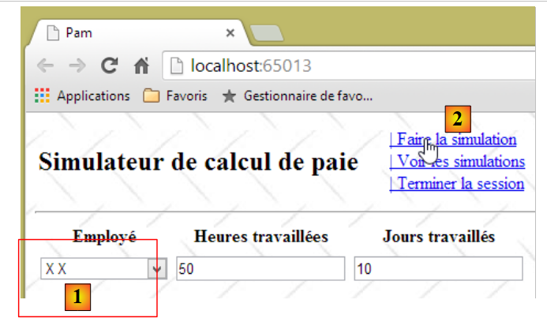 |
- en [1], on choisit un employé qui n'existe pas (voir la définition de la couche [métier] simulée au paragraphe 9.7.5 ;
- en [2], on fait la simulation ;
- en [3] ci-dessous, on récupère une page d'erreur.
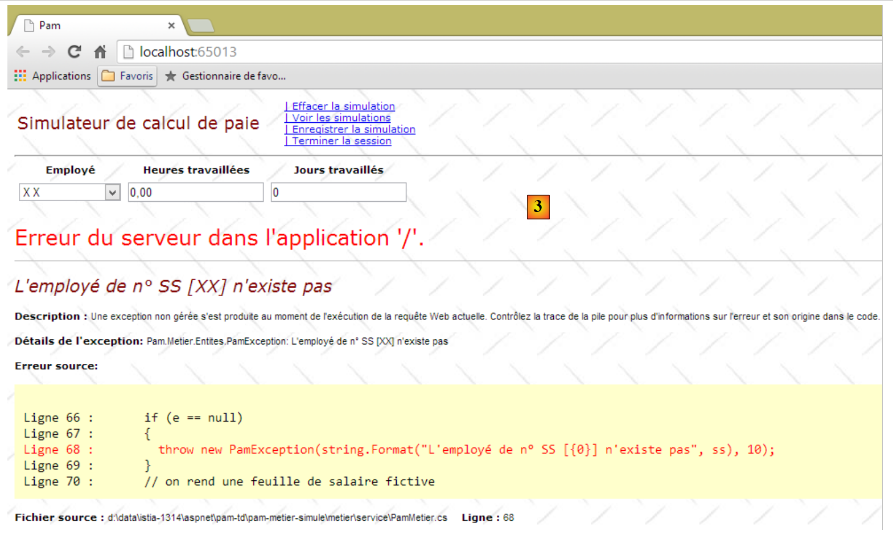 |
Que s'est-il passé ?
La fonction JS [faireSimulation] a été exécutée. Son code ressemble à ceci :
function faireSimulation() {
...
// on fait un appel Ajax à la main
$.ajax({
url: '/Pam/FaireSimulation',
...
beforeSend: function () {
// signal d'attente allumé
loading.show();
},
success: function (data) {
...
},
error: function (jqXHR) {
// affichage erreur
simulation.html(jqXHR.responseText);
simulation.show();
},
complete: function () {
// signal d'attente éteint
loading.hide();
}
});
// menu
setMenu([lnkEffacerSimulation, lnkEnregistrerSimulation, lnkTerminerSession, lnkVoirSimulations]);
}
L'appel Ajax a échoué et c'est la fonction des lignes 14-18 qui s'est exécutée. La page d'erreur [jqXHR.responseText] renvoyée par le serveur a été affichée. Celle-ci est assez précise. La couche [métier] simulée a lancé une exception parce que le n° SS qu'on lui a fourni n'est pas celui d'un employé existant (voir code de la couche [métier] simulée au paragraphe 9.7.5). Il nous faut gérer ce cas proprement.
Nous allons créer une vue partielle [Erreurs.chtml] qui sera renvoyée au client JS à chaque fois qu'une erreur sera détectée côté serveur :
 |
Le code de la vue partielle [Erreurs.chtml] est le suivant :
@model IEnumerable<string>
<hr />
<h2>Les erreurs suivantes se sont produites</h2>
<ul>
@foreach (string msg in Model)
{
<li>@msg</li>
}
</ul>
- ligne 1 : la vue reçoit pour modèle une liste de messages d'erreur ;
- lignes 5-10 : qui sont affichés dans une liste HTML ;
Maintenant, modifions le code de l'action serveur [FaireSimulation] de la façon suivante :
// faire une simulation
[HttpPost]
public PartialViewResult FaireSimulation(ApplicationModel application, FormCollection data)
{
...
// on calcule le salaire
FeuilleSalaire feuilleSalaire = null;
Exception exception=null;
try
{
// calcul salaire
feuilleSalaire = ...
}
catch (Exception ex)
{
exception = ex;
}
// erreur ?
if (exception == null)
{
// on affiche la feuille de salaire
return PartialView("Simulation", feuilleSalaire);
}
else
{
// on affiche la page d'erreurs
return PartialView("Erreurs", Static.GetErreursForException(exception));
}
}
- lignes 9-17 : le calcul du salaire est désormais fait dans un try / catch ;
- ligne 27 : s'il y a eu erreur, on affiche la vue partielle [Erreurs.cshtml] avec pour modèle la liste de messages d'erreur fournie par la méthode statique [Static.GetErreursForException(exception)].
On regroupe dans la classe [Static] deux fonctions utilitaires statiques [1] :
 |
using System;
using System.Collections.Generic;
using System.Web.Mvc;
namespace PamWeb.Infrastructure
{
public class Static
{
// liste des messages d'erreur d'une exception
public static List<string> GetErreursForException(Exception ex)
{
List<string> erreurs = new List<string>();
while (ex != null)
{
erreurs.Add(ex.Message);
ex = ex.InnerException;
}
return erreurs;
}
// liste des messages d'erreur liés à un modèle invalide
public static List<string> GetErreursForModel(ModelStateDictionary état)
{
List<string> erreurs = new List<string>();
if (!état.IsValid)
{
foreach (ModelState modelState in état.Values)
{
foreach (ModelError error in modelState.Errors)
{
erreurs.Add(getErrorMessageFor(error));
}
}
}
return erreurs;
}
// le message d'erreur lié à un élément du modèle de l'action
static private string getErrorMessageFor(ModelError error)
{
if (error.ErrorMessage != null && error.ErrorMessage.Trim() != string.Empty)
{
return error.ErrorMessage;
}
if (error.Exception != null && error.Exception.InnerException == null && error.Exception.Message != string.Empty)
{
return error.Exception.Message;
}
if (error.Exception != null && error.Exception.InnerException != null && error.Exception.InnerException.Message != string.Empty)
{
return error.Exception.InnerException.Message;
}
return string.Empty;
}
}
}
- lignes 10-19 : la fonction statique [GetErreursForException] rend la liste des erreurs d'une pile d'exceptions ;
- lignes 22-36 : la fonction statique [GetErreursForModel] rend la liste des erreurs d'un modèle d'action invalide. Le code de cette fonction ainsi que celui de la méthode privée [getErrorMessageFor] (lignes 39-54) a déjà été rencontré précédemment.
Ceci fait, nous pouvons tester de nouveau le cas d'erreur :
 |
- en [1], on choisit l'employé qui n'existe pas ;
- en [2], on fait la simulation ;
- en [3], on récupère la nouvelle page d'erreurs.
Revenons à l'action serveur [FaireSimulation] :
// faire une simulation
[HttpPost]
public PartialViewResult FaireSimulation(ApplicationModel application, FormCollection data)
{
// création du modèle de l'action
IndexModel modèle = new IndexModel() { Application = application};
// on essaie de récupérer les valeurs postées dans le modèle
TryUpdateModel(modèle, data);
// on calcule le salaire
...
}
En ligne 8, on met à jour le modèle de la ligne 6 avec les valeurs postées par l'appel Ajax. Nous ne vérifions pas la validité du modèle. Il faut le faire car on ne peut savoir d'où proviennent les valeurs postées. Quelqu'un a pu bricoler un POST et nous envoyer des données invalides.
Travail : en suivant le modèle que nous avons développé pour le cas de l'exception, modifiez l'action serveur [FaireSimulation] afin d'envoyer une page d'erreurs lorsque les données postées sont invalides. Pour cela, on utilisera la méthode statique [GetErreursForModel] de la classe [Static].
Comment tester cette modification ? Au paragraphe 9.11.3, vous avez fait en sorte que la fonction JS [faireSimulation] ne fasse pas le POST des valeurs saisies si celles-ci étaient invalides. Mettez en commentaires les lignes qui réalisent cela puis faites le test suivant :
 |
- en [1], on fait la simulation avec des valeurs invalides ;
- en [2], on récupère bien la page d'erreurs que nous venons de construire, preuve que les validateurs côté serveur ont bien fonctionné.
Pour la suite, pensez à décommenter les lignes que vous venez de mettre en commentaires dans la fonction JS [faireSimulation].
9.13. Étape 7 : mise en place d'une session utilisateur
L'application [Simulateur de calcul de paie] permet à l'utilisateur de faire diverses simulations de paie avec le lien [Faire la simulation], de les conserver avec le lien [Enregistrer la simulation], de les afficher avec le lien [Voir les simulations] et de les supprimer avec le lien [Retirer la simulation]. Nous savons qu'entre deux requêtes successives de l'utilisateur, il n'y a pas de mémoire sauf si on en crée une par le mécanisme de la session (cf paragraphe 4.10). Il est assez clair ici que nous devons conserver dans la session la liste des simulations enregistrées au fil du temps par l'utilisateur. Il y a d'autres données à mémoriser : lorsque l'utilisateur fait une simulation, celle-ci n'est enregistrée dans la liste des simulations que si l'utilisateur le demande avec le lien [Enregistrer la simulation]. Lorsqu'il le fait, on doit être capable de retrouver la simulation calculée dans la requête précédente. Pour cela, celle-ci sera mise également dans la session. Enfin, nous allons numéroter les simulations à partir de 1. Pour numéroter correctement une nouvelle simulation, il faut avoir conservé le n° de la simulation précédente, là encore dans la session.
Dans le paragraphe 4.10, nous avons introduit le concept de modèle de session en paramètre d'entrée d'une action afin que celle-ci ait accès à la session. Nous allons reprendre ce concept. Vous êtes invités à relire le paragraphe concerné si cette notion est obscure pour vous.
Nous créons la classe [SessionModel] suivante :
 |
Son code est le suivant :
using Pam.Web.Models;
using System.Collections.Generic;
namespace Pam.Web.Models
{
public class SessionModel
{
// la liste des simulations
public List<Simulation> Simulations { get; set; }
// n° de la prochaine simulation
public int NumNextSimulation { get; set; }
// la dernière simulation
public Simulation Simulation { get; set; }
// constructeur
public SessionModel()
{
// liste de simulations vide
Simulations = new List<Simulation>();
// n° prochaine simulation
NumNextSimulation = 1;
}
}
}
La classe [Simulation] des lignes 9 et 13, va enregistrer des informations sur une simulation. Qu'avons-nous besoin d'enregistrer ? Le lien [Faire la simulation] calcule une feuille de salaire de type [FeuilleSalaire]. Il paraît naturel de mettre celle-ci dans la simulation. Par ailleurs, il nous faut mémoriser les informations qui ont mené à cette feuille de salaire :
- l'employé sélectionné. On trouvera celui-ci dans le champ [FeuilleSalaire.Employe]. Il est donc inutile de le mémoriser une seconde fois ;
- le nombre d'heures et de jours travaillés. Ces informations ne sont pas dans le type [FeuilleSalaire]. Il nous faut donc les mémoriser.
Enfin chaque simulation est répérée par un numéro. On pourrait donc partir sur la classe [Simulation] suivante :
using Pam.Metier.Entites;
namespace Pam.Web.Models
{
public class Simulation
{
// n° de la simulation
public int Num { get; set; }
// le nombre d'heures travaillées
public double HeuresTravaillées { get; set; }
// le nombre de jours travaillés
public int JoursTravaillés { get; set; }
// la feuille de salaire
public FeuilleSalaire FeuilleSalaire { get; set; }
}
}
L'action serveur [FaireSimulation] doit, outre calculer une feuille de salaire, créer une simulation et la mettre dans la session. Pour cela, elle va recevoir en paramètre le modèle de la session :
// faire une simulation
[HttpPost]
public PartialViewResult FaireSimulation(ApplicationModel application, SessionModel session, FormCollection data)
{
// création du modèle de l'action
IndexModel modèle = new IndexModel() { Application = application };
// on essaie de récupérer les valeurs postées dans le modèle
TryUpdateModel(modèle, data);
// modèle valide ?
if (!ModelState.IsValid)
{
// on affiche la page d'erreurs
return PartialView("Erreurs", Static.GetErreursForModel(ModelState));
}
// on calcule le salaire
FeuilleSalaire feuilleSalaire = null;
Exception exception = null;
try
{
// calcul salaire
feuilleSalaire = application.PamMetier.GetSalaire(modèle.SS, modèle.HeuresTravaillées, (int)modèle.JoursTravaillés);
}
catch (Exception ex)
{
exception = ex;
}
// erreur ?
if (exception != null)
{
// on affiche la page d'erreurs
return PartialView("Erreurs", Static.GetErreursForException(exception));
}
// on crée une simulation et on la met dans la session
session.Simulation = ...
// on affiche la feuille de salaire
return PartialView("Simulation", feuilleSalaire);
}
- ligne 3 : l'action reçoit en paramètre le modèle de la session ;
Travail 1 : compléter le code de l'action, ligne 34
Travail 2 : en suivant la démarche du paragraphe 4.10, faites ce qui est nécessaire pour que le paramètre [SessionModel session] de l'action soit bien initialisé par le framework. Si on ne fait rien, on aura un pointeur null pour ce paramètre.
9.14. Étape 8 : enregistrer une simulation
9.14.1. Le problème
Lorsque nous avons fait une simulation, nous pouvons l'enregistrer :
 |

La vue partielle [Simulations.cshtml] affiche désormais la liste des simulations faites par l'utilisateur. On rappelle que la feuille de salaire calculée est fictive.
9.14.2. Écriture de l'action serveur [EnregistrerSimulation]
Le lien Ajax [Enregistrer la simulation] appelle l'action serveur [EnregistrerSimulation] dont le code était jusqu'à maintenant le suivant :
[HttpPost]
public PartialViewResult EnregistrerSimulation()
{
return PartialView("Simulations");
}
Il évolue comme suit :
// enregistrer une simulation
[HttpPost]
public PartialViewResult EnregistrerSimulation(SessionModel session)
{
// on enregistre la dernière simulation faite dans la liste des simulations de la session
...
// on incrémente dans la session le n° de la prochaine simulation
...
// on affiche la liste des simulations
...
}
- ligne 1 : l'action [EnregistrerSimulation] a besoin d'avoir accès à la session. C'est pourquoi elle a pour paramètre le modèle de la session.
Travail : compléter l'action serveur [EnregistrerSimulation].
9.14.3. Écriture de la vue partielle [Simulations.cshtml]
L'action précédente [EnregistrerSimulation] fait afficher la vue partielle [Simulations.cshtml] avec pour modèle la liste des simulations faites par l'utilisateur. Son code est le suivant :
@model IEnumerable<Simulation>
@using Pam.Web.Models
@if (Model.Count() == 0)
{
<h2>Votre liste de simulations est vide</h2>
}
@if (Model.Count() != 0)
{
<h2>Liste des simulations</h2>
...
}
Travail 1 : compléter le code de la vue partielle [Simulations.cshtml]. On utilisera une table HTML pour l'affichage des simulations. On pourra s'aider des exemples du paragraphe 5.4.
Note : le lien [retirer] de chaque simulation de la table HTML sera un lien Javascript de la forme suivante :
où N est le n° de la simulation.
Travail 2 : testez votre application en faisant des simulations. Pour faire celles-ci, faites la séquence suivante de façon répétée : 1) chargez la page de l'application par [F5], 2) faites une simulation, 3) enregistrez-la. Les simulations vont s'accumuler dans la session ce qui devrait être reflétée dans la vue [Simulations.cshtml].
Travail 3 : améliorez la vue partielle [Simulations.cshtml] de telle sorte que les couleurs des lignes de la table HTML soient alternées.

On donnera de façon alternée aux lignes <tr> de la table HTML, les classes CSS [pair] et [impair] définies dans la feuille de style [/Content/Site.css] :
.impair {
background-color: beige;
}
.pair {
background-color: lightsteelblue;
}
9.15. Étape 9 : retourner au formulaire de saisie
9.15.1. Le problème
Lorsque nous avons obtenu la liste des simulations, nous pouvons revenir au formulaire de saisie, ce qu'on ne pouvait plus faire depuis un moment :
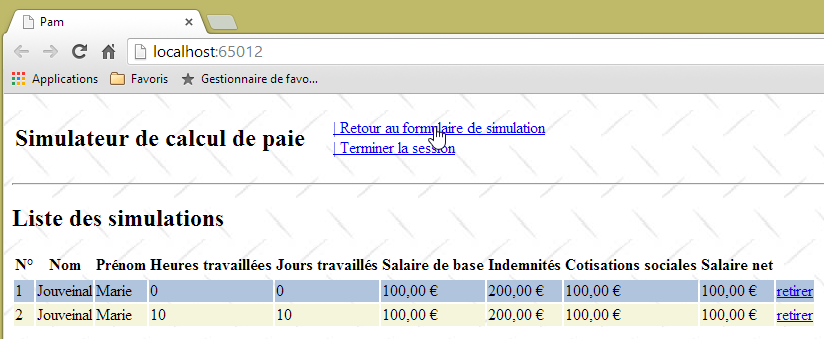

9.15.2. Écriture de l'action serveur [Formulaire]
Le lien Ajax [Retour au formulaire de simulation] appelle l'action serveur [Formulaire] dont le code était jusqu'à maintenant le suivant :
[HttpPost]
public PartialViewResult Formulaire()
{
return PartialView("Formulaire");
}
La vue partielle [Formulaire] qu'elle affiche attend un modèle [IndexModel] (ligne 1 ci-dessous) :
@model Pam.Web.Models.IndexModel
@using (Html.BeginForm("FaireSimulation", "Pam", FormMethod.Post, new { id = "formulaire" }))
{
...
}
<div id="simulation" />
C'est pour cette raison que le lien [Retour au formulaire de simulation] ne marchait plus.
Travail : écrire la nouvelle version de l'action serveur [Formulaire] (2 lignes à réécrire) puis faire les tests.
9.15.3. Modification de la fonction Javascript [retourFormulaire]
Avec la modification faite précédemment, on peut désormais revenir au formulaire mais une anomalie apparaît alors :
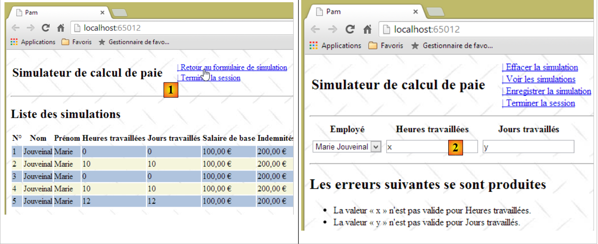 |
- en [1], on revient au formulaire de saisie ;
- en [2], on fait une simulation avec des saisies erronées. On découvre alors que les validateurs côté client ne fonctionnent plus. Ici, le serveur a été appelé et a renvoyé une page d'erreurs grâce au travail fait au paragraphe 9.12.4.
Cette anomalie a été identifiée et traitée au paragraphe 7.6.7.
Travail : en suivant la démarche du paragraphe 7.6.7, corrigez la fonction Javascript [retourFormulaire] puis faites des tests pour vérifier que les validateurs côté client fonctionnent de nouveau.
9.16. Étape 10 : voir la liste des simulations
9.16.1. Le problème
Lorsqu'on travaille avec le formulaire de simulation, on peut visualiser la liste des simulations qu'on a faites :
 |  |
9.16.2. Écriture de l'action serveur [VoirSimulations]
Le lien Ajax [Voir les simulations] appelle l'action serveur [VoirSimulations] dont le code était jusqu'à maintenant le suivant :
// voir les simulations
[HttpPost]
public PartialViewResult VoirSimulations()
{
return PartialView("Simulations");
}
La vue partielle [Simulations] qu'elle affiche attend un modèle [IEnumerable<Simulation>] (ligne 1 ci-dessous) :
@model IEnumerable<Simulation>
@using Pam.Web.Models
@if (Model.Count() == 0)
{
<h2>Votre liste de simulations est vide</h2>
}
@if (Model.Count() != 0)
{
<h2>Liste des simulations</h2>
...
}
C'est pour cette raison que le lien [Voir les simulations] ne marchait plus.
Travail : écrire la nouvelle version de l'action serveur [VoirSimulations] (2 lignes à réécrire) puis faire les tests.
9.17. Étape 11 : terminer la session
9.17.1. Le problème
On peut à tout moment terminer la session de l'utilisateur avec le lien [Ajax] [Terminer la session]. Ceci a pour effet d'abandonner la session courante pour en commencer une nouvelle. Par ailleurs, on revient à la vue du formulaire :
 |
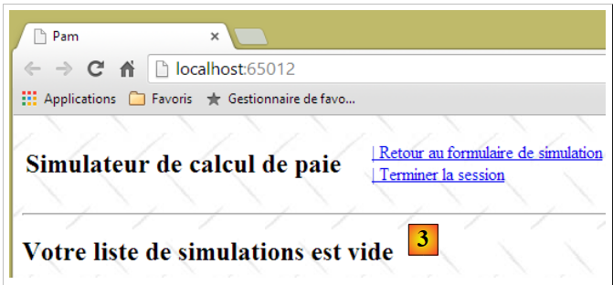 |
- en [1], on a fait deux simulations puis on termine la session ;
- en [2], on est revenu au formulaire de saisies. On veut voir les simulations ;
- en [3], à cause du changement de session, la liste des simulations est désormais vide.
9.17.2. Écriture de l'action serveur [TerminerSession]
Le lien Ajax [Terminer la session] appelle l'action serveur [TerminerSession] dont le code était jusqu'à maintenant le suivant :
// terminer la session
[HttpPost]
public PartialViewResult TerminerSession()
{
return PartialView("Formulaire");
}
La vue partielle [Formulaire] qu'elle affiche attend un modèle [IndexModel] (ligne 1 ci-dessous) :
@model Pam.Web.Models.IndexModel
@using (Html.BeginForm("FaireSimulation", "Pam", FormMethod.Post, new { id = "formulaire" }))
{
...
}
<div id="simulation" />
C'est pour cette raison que le lien [Terminer la session] ne marchait plus.
Travail : écrire la nouvelle version de l'action serveur [TerminerSession] (2 lignes à réécrire) puis faire les tests.
Note : pour abandonner la session dans l'action, on écrit :
9.17.3. Modification de la fonction Javascript [terminerSession]
Avec la modification faite précédemment, on peut désormais revenir au formulaire mais une anomalie apparaît alors, celle qui a été décrite précédemment au paragraphe 9.15.3.
Travail : en suivant la démarche que vous avez suivie au paragraphe 9.15.3, corrigez la fonction Javascript [terminerSession] puis faites des tests pour vérifier que les validateurs côté client fonctionnent de nouveau.
9.18. Étape 12 : effacer la simulation
9.18.1. Le problème
Lorsqu'on a fait une simulation, on peut l'effacer avec le lien Javascript [Effacer la simulation] :
 |  |
9.18.2. Écriture de l'action client [effacerSimulation]
La fonction Javascript [effacerSimulation] a pour l'instant le code suivant :
function effacerSimulation() {
// on efface les saisies du formulaire
// ...
// on cache la simulation si elle existe
$("#simulation").hide();
// menu
setMenu([lnkFaireSimulation, lnkTerminerSession, lnkVoirSimulations]);
}
Travail : complétez ce code. On pourra s'inspirer de l'exemple du paragraphe 7.6.6
9.19. Étape 13 : retirer une simulation
9.19.1. Le problème
Lorsqu'on a la page des simulations, on peut en supprimer certaines avec le lien Javascript [retirer] :

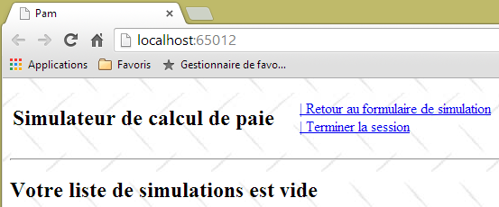
9.19.2. Écriture de l'action client [retirerSimulation]
Les liens [retirer] ont la forme HTML suivante :
où N est le n° de la simulation.
Travail : en suivant la démarche des paragraphes 9.9.3 écrivez la fonction JS [retirerSimulation]. Celle-ci émettra un appel Ajax de type POST vers l'action [/Pam/RetirerSimulation]. Elle postera la donnée N sous la forme num=N.
Note : la fonction JS [retirerSimulation] est analogue aux autres fonction JS que vous avez écrites et qui font un appel Ajax au serveur. La seule nouveauté ici est le POST d'une valeur qui n'est pas dans un formulaire. On sait que les valeurs postées sont rassemblées dans une chaîne de caractères sous la forme :
la fonction JS [retirerSimulation] aura donc la forme suivante :
function retirerSimulation(N) {
// on fait un appel Ajax à la main
$.ajax({
url: '/Pam/RetirerSimulation',
...
data:"num="+N,
...
});
// menu
setMenu([lnkRetourFormulaire, lnkTerminerSession]);
}
- ligne 6 : la propriété [data] d'un appel Ajax JQuery représente la chaîne postée au serveur.
9.19.3. Écriture de l'action serveur [RetirerSimulation]
L'action serveur [RetirerSimulation] :
- reçoit un paramètre posté appelé [num] qui est le n° d'une simulation ;
- doit retirer de la liste des simulations enregistrée en session, la simulation qui a ce n° ;
- doit ensuite faire afficher la nouvelle liste de simulations.
Travail : écrire l'action serveur [RetirerSimulation]. Revoyez le paragraphe 4.1, pour savoir comment récupérer le paramètre posté appelé [num].
9.20. Étape 14 : amélioration de la méthode d'initialisation de l'application
Notre application web est terminée. Elle est fonctionnelle avec une classe [métier] simulée. Rappelons l'architecture que nous avons développée :
 |
Il reste quelques détails à régler avant de passer à l'implémentation réelle de la couche [métier] et cela se passe dans la méthode d'initialisation de l'application : la méthode [Application_Start] dans [Global.asax] :
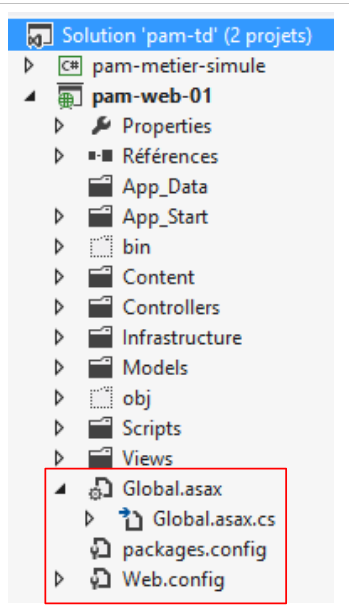 |
La méthode [Application_Start] dans [Global.asax] est exécutée une unique fois au démarrage de l'application. C'est là que le fichier de configuration [Web.config] peut être exploité. Pour l'instant, notre méthode [Application_Start] ressemble à ceci :
// application
protected void Application_Start()
{
// ----------Auto-généré
AreaRegistration.RegisterAllAreas();
WebApiConfig.Register(GlobalConfiguration.Configuration);
FilterConfig.RegisterGlobalFilters(GlobalFilters.Filters);
RouteConfig.RegisterRoutes(RouteTable.Routes);
BundleConfig.RegisterBundles(BundleTable.Bundles);
// -------------------------------------------------------------------
// ---------- configuration spécifique
// -------------------------------------------------------------------
// données de portée application
ApplicationModel application = new ApplicationModel();
Application["data"] = application;
// instanciation couche [métier]
application.PamMetier = new PamMetier();
...
// model binders
...
}
En ligne 17, la couche métier est instanciée par un opérateur new. Par ailleurs, le modèle de l'application est défini comme suit :
public class ApplicationModel
{
// --- données de portée application ---
public Employe[] Employes { get; set; }
public IPamMetier PamMetier { get; set; }
public SelectListItem[] EmployesItems { get; set; }
}
Ligne 5 ci-dessus, on voit que le type de la propriété [PamMetier] est celui de l'interface [IPamMetier]. Ceci signifie que cette propriété peut être initialisée par tout objet implémentant cette interface. Or ligne 17 de [Application_Start], nous avons écrit en dur le nom d'une classe d'implémentation de [IPamMetier]. Si donc la couche [métier] venait à être implémentée avec une nouvelle classe implémentant [IPamMetier], il faudrait changer cette ligne. Ce n'est pas bien important mais cela peut être évité. La définition de la classe d'implémentation de l'interface [IPamMetier] peut être déportée dans un fichier de configuration. Pour changer d'implémentation, on change alors le contenu de ce fichier de configuration. Le code .NET n'a pas à être changé.
Nous utiliserons ici le conteneur d'injections de dépendances [Spring.net]. Il existe d'autres frameworks .NET pour faire la même chose, peut-être mieux et plus simplement.
L'architecture du projet évolue comme suit :
 |
- en [A], la méthode d'initialisation de la couche [ASP.NET MVC] va demander à [Spring.net] une référence sur la couche [métier] simulée ;
- en [B], [Spring.net] va créer la couche [métier] simulée en exploitant son fichier de configuration pour savoir quelle classe il doit instancier ;
- en [C], [Spring.net] va rendre la référence de la couche [métier] simulée à la couche [ASP.NET MVC].
On notera que par défaut, les objets gérés par [Spring.net] sont des singletons : ils n'existent qu'en un unique exemplaire. Ainsi si plus tard dans notre exemple, du code redemande à [Spring.net] une référence sur la couche [métier] simulée, [Spring.net] se contente de rendre la référence sur l'objet initialement créé.
9.20.1. Ajout des références [Spring] au projet web
Nous allons utiliser [Spring.net]. Ce framework arrive sous la forme de DLL qu'il faut ajouter aux références du projet. On pourra procéder ainsi :
 |
En [1], cliquer droit sur la branche [References] du projet puis prendre l'option [Gérer les packages NuGet]. Il faut une connexion internet. Ensuite on procèdera comme il a été fait précédemment pour la bibliothèque JQuery [Globalize]. On cherchera le mot clé [Spring.core] et on installera ce package. L'installation amène deux DLL : [Spring.core] [2] et [Common.Logging] [3]. Dans les exemples qui suivent, c'est la version 1.3.2 de Spring qui a été utilisée.
Note : si vous n'avez pas de connexion Internet, vous trouverez ces DLL dans un dossier [lib] du support de cette étude de cas.
9.20.2. Configuration de [web.config]
La définition de la classe d'implémentation de l'interface [IPamMetier] se fait dans le fichier [web.config].
<configuration>
<configSections>
...
<sectionGroup name="spring">
<section name="objects" type="Spring.Context.Support.DefaultSectionHandler, Spring.Core" />
<section name="context" type="Spring.Context.Support.ContextHandler, Spring.Core" />
</sectionGroup>
</configSections>
<!-- configuration Spring -->
<spring>
<context>
<resource uri="config://spring/objects" />
</context>
<objects xmlns="http://www.springframework.net">
<object id="pammetier" type="Pam.Metier.Service.PamMetier, pam-metier-simule"/>
</objects>
</spring>
...
- lignes 2-8 : repérez la balise <configSections> du fichier et insérez dedans les lignes 4-7 ;
- ligne 4 : l'attribut [name="spring"] indique des informations concernant la section [spring] des lignes 10-17 ;
- ligne 5 : définit la classe [Spring.Context.Support.DefaultSectionHandler] située dans la DLL [Spring.Core] comme celle capable de traiter la section [objects] des lignes 14-16 ;
- ligne 6 : définit la classe [Spring.Context.Support.ContextHandler] située dans la DLL [Spring.Core] comme celle capable de traiter la section [context] des lignes 11-13 ;
- lignes 11-13 : cette section apporte l'information [<resource uri="config://spring/objects" />] qui indique que les objets Spring se trouvent dans le fichier de configuration dans la section [/spring/objects], ç-à-d aux lignes 14-16 ;
- lignes 14-16 : la balise [objects] introduit les objets Spring ;
- ligne 15 : définit un objet identifié par [id="pammetier"] qui est une instance de la classe [Pam.Metier.Service.PamMetier] située dans la DLL [pam-metier-simule]. Là, il ne faut pas se tromper. Pour l'attribut [id], vous pouvez mettre ce que vous voulez. Vous allez utiliser cet identifiant dans [Global.asax]. La classe [Pam.Metier.Service.PamMetier] est celle de notre couche [métier] simulée. Il faut revenir à sa définition pour connaître son nom complet :
namespace Pam.Metier.Service
{
public class PamMetier : IPamMetier
{
...
Pour la DLL [pam-metier-simule], il faut regarder les propriétés du projet C# [pam-metier-simule] :
 |
Il faut utiliser le nom indiqué en [1].
9.20.3. Modification de [Application_Start]
La méthode [Application_Start] évolue comme suit :
using Spring.Context.Support;
// application
protected void Application_Start()
{
// ----------Auto-généré
AreaRegistration.RegisterAllAreas();
WebApiConfig.Register(GlobalConfiguration.Configuration);
FilterConfig.RegisterGlobalFilters(GlobalFilters.Filters);
RouteConfig.RegisterRoutes(RouteTable.Routes);
BundleConfig.RegisterBundles(BundleTable.Bundles);
// -------------------------------------------------------------------
// ---------- configuration spécifique
// -------------------------------------------------------------------
// données de portée application
ApplicationModel application = new ApplicationModel();
Application["data"] = application;
// instanciation couche [métier]
application.PamMetier = ContextRegistry.GetContext().GetObject("pammetier") as IPamMetier;
...
// model binders
...
}
- ligne 19 : on utilise la classe Spring [ContextRegistry] qui est une classe capable d'exploiter le fichier [web.config]. Pour cela, on a besoin d'importer l'epace de noms de la ligne 1. La méthode statique [GetContext] permet d'avoir le contenu des balises [context] qui indiquent où se trouvent les objets Spring. La méthode statique[GetObject] permet ensuite d'avoir un objet particulier identifié par son attribut id. On notera que maintenant, le nom de la classe d'implémentation de l'interface [IPamMetier] n'est plus inscrit en dur dans le code. Il est maintenant dans le fichier [web.config].
Après avoir fait toutes ces modifications, testez votre application. Elle doit marcher.
9.20.4. Gérer une erreur d'initialisation de l'application
Dans la méthode [Application_Start] nous avons écrit :
application.PamMetier = ContextRegistry.GetContext().GetObject("pammetier") as IPamMetier;
L'instruction à droite du signe = peut échouer. Il y a diverses raisons à cela :
- la plus évidente est qu'on se trompe dans le nom de l'objet à instancier ;
- l'autre est que l'instanciation de la couche [métier] se passe mal. Ce ne peut être le cas pour notre couche [métier] simulée mais ça pourra l'être pour notre couche [métier] réelle qui sera connectée à une base de données. Le SGBD peut ne pas être lancé, les informations sur la base à gérer peuvent être incorrectes, etc...
Nous allons gérer une éventuelle exception dans un try / catch. Le code évolue comme suit :
// application
protected void Application_Start()
{
// ----------Auto-généré
...
// -------------------------------------------------------------------
// ---------- configuration spécifique
// -------------------------------------------------------------------
// données de portée application
ApplicationModel application = new ApplicationModel();
Application["data"] = application;
application.InitException = null;
try
{
// instanciation couche [métier]
application.PamMetier = ContextRegistry.GetContext().GetObject("pammetier") as IPamMetier;
}
catch (Exception ex)
{
application.InitException = ex;
}
//si pas d'erreur
if (application.InitException == null)
{
....
}
// model binders
...
}
- ligne 12, nous introduisons une nouvelle propriété nommée [InitException] dans le modèle de l'application :
public class ApplicationModel
{
// --- données de portée application ---
public Employe[] Employes { get; set; }
public IPamMetier PamMetier { get; set; }
public SelectListItem[] EmployesItems { get; set; }
public Exception InitException { get; set; }
}
- ligne 7 ci-dessus, l'exception qui se produit éventuellement lors de l'initialisation de l'application ;
- lignes 13-21 de [Application_Start] : l'instanciation de la couche [métier] se fait désormais dans un try / catch ;
- ligne 20 : on mémorise l'exception ;
- lignes 23-26 : s'il n'y a pas eu d'erreur, on exécute le code qu'on avait précédemment ;
- ligne 28 : les [ModelBinders] sont créés qu'il y ait eu erreur ou non. C'est important. On veut s'assurer que le modèle de l'application [ApplicationModel] va bien être lié par le framework.
On sait qu'au démarrage de l'application, l'action serveur [Index] est exécutée. Pour l'instant c'est la suivante :
[HttpGet]
public ViewResult Index(ApplicationModel application)
{
return View(new IndexModel() { Application = application });
}
Ligne 2, l'action [Index] reçoit le modèle de l'application. Elle peut donc savoir si l'initialisation s'est bien passée ou non et afficher une page d'erreurs si l'initialisation a échoué d'une façon ou d'une autre. Nous faisons évoluer le code de la façon suivante :
[HttpGet]
public ViewResult Index(ApplicationModel application)
{
// erreur d'initialisation ?
if (application.InitException != null)
{
// page d'erreurs sans menu
return View("InitFailed",Static.GetErreursForException(application.InitException));
}
// pas d'erreur
return View(new IndexModel() { Application = application });
}
Ligne 8, en cas d'erreur d'initialisation, nous affichons la vue [InitFailed.cshtml] avec pour modèle la liste des messages d'erreur de l'exception qui s'est produite lors de l'initialisation. La méthode [Static.GetErreursForException] a été présentée et expliquée au paragraphe 9.12.4. La vue [InitFailed.cshtml] sera la suivante :
 |
Son code est le suivant :
@model IEnumerable<string>
@{
Layout = null;
}
<!DOCTYPE html>
<html>
<head>
<title>@ViewBag.Title</title>
<meta charset="utf-8" />
<meta name="viewport" content="width=device-width" />
<link rel="stylesheet" href="~/Content/Site.css" />
</head>
<body>
<table>
<tbody>
<tr>
<td>
<h2>Simulateur de calcul de paie</h2>
</td>
</tbody>
</table>
<hr />
<h2>Les erreurs suivantes se sont produites à l'initialisation de l'application : </h2>
<ul>
@foreach (string msg in Model)
{
<li>@msg</li>
}
</ul>
</body>
</html>
- ligne 1 : le modèle de la vue est une liste de messages d'erreur. Ceux-ci sont affichés dans une liste HTML aux lignes 24-29 ;
- ligne 3 : cette vue n'utilise pas la page maître [_Layout.cshtml]. En effet, on ne veut pas du menu amené par ce document. On construit donc une page HTML complète (lignes 5-23).
Pour tester, il suffit de modifier dans [Application_Start], l'instanciation de la couche [métier] comme suit :
try
{
// instanciation couche [métier]
application.PamMetier = ContextRegistry.GetContext().GetObject("xx") as IPamMetier;
}
catch (Exception ex)
{
application.InitException = ex;
}
Ligne 4, on cherche un objet qui n'existe pas dans les objets Spring.
Lorsqu'on valide ces modifications et qu'on lance l'application, on obtient la page suivante :
 |
On obtient une page d'erreurs sans menu. L'utilisateur ne peut rien faire d'autre que constater l'erreur. C'est ce qui était souhaité.
9.21. Où en sommes – nous ?
Nous avons désormais une application web opérationnelle qui travaille avec une couche métier simulée. Son architecture est la suivante :
 |
La couche [ASP.NET MVC] travaille avec la couche métier simulée au-travers de l'interface [IPamMetier]. Si nous remplaçons cette couche métier simulée par une couche métier réelle qui respecte cette interface, nous n'aurons pas à modifier le code de la couche web. Grâce à [Spring.net], nous aurons juste à changer dans [web.config] la classe d'implémentation de l'interface [IPamMetier]. Nous partons sur cette voie.
La nouvelle architecture sera la suivante :
 |
Nous allons décrire successivement :
- la couche [EF5] connectée au SGBD. Elle sera implémentée avec Entity Framework 5 (EF5) ;
- la couche [DAO] qui gère l'accès aux données via la couche [EF5]. Cela lui permet d'ignorer l'existence du SGBD. Cette couche se contente de manipuler les entités de l'application [Employe, Cotisations, Indemnites] ;
- la couche [métier] qui implémente le calcul du salaire.
La nouvelle architecture est celle présentée tout au début de ce document au paragraphe 1.1, et que nous rappelons maintenant :
 |
- la couche [Web] est la couche en contact avec l'utilisateur de l'application Web. Celui-ci interagit avec l'application Web au travers de pages Web visualisées par un navigateur. C'est dans cette couche que se situe ASP.NET MVC et uniquement dans cette couche ;
- la couche [métier] implémente les règles de gestion de l'application, tels que le calcul d'un salaire ou d'une facture. Cette couche utilise des données provenant de l'utilisateur via la couche [Web] et du SGBD via la couche [DAO] ;
- la couche [DAO] (Data Access Objects), la couche [ORM] (Object Relational Mapper) et le connecteur ADO.NET gèrent l'accès aux données du SGBD. La couche [ORM] fait un pont entre les objets manipulés par la couche [DAO] et les lignes et les colonnes des données d'une base de données relationnelle. Deux ORM sont couramment utilisés dans le monde .NET, NHibernate (http://sourceforge.net/projects/nhibernate/ ) et Entity Framework (http://msdn.microsoft.com/en-us/data/ef.aspx ) ;
- l'intégration des couches peut être réalisée par un conteneur d'injection de dépendances (Dependency Injection Container) tel que Spring (http://www.springframework.net/ ) ;
Les couches [métier], [DAO], [EF5] vont être implémentées à l'aide de projets C#. A partir de maintenant, nous travaillons avec Visual Studio Express 2012 pour le bureau.
9.22. Étape 15 : mise en place de la couche Entity Framework 5
 |
La création de la couche [EF5] est moins affaire de codage que de configuration. Pour appréhender l'écriture de cette couche, on lira le document [Introduction à Entity Framework 5 Code First] disponible à l'URL [http://tahe.developpez.com/dotnet/ef5cf-02/]. C'est un document assez volumineux. Les fondamentaux sont dans les quatre premiers chapitres. Les paragraphes à lire plus particulièrement seront précisés. Lorsque nous ferons référence à ce document nous utiliserons la notation [refEF5].
Par ailleurs, nous aurons parfois besoin de concepts C#. On référencera alors le cours [Introduction au langage C#] disponible à l'URL [http://tahe.developpez.com/dotnet/csharp/] avec la notation [refC#].
9.22.1. La base de données
La base de données de l'application a été présentée au paragraphe 9.4. C'est une base de données MySQL nommée [dbpam_ef5] (pam=Paie Assistante Maternelle). Cette base a un administrateur appelé root sans mot de passe.
Rappelons le schéma de la base de données. Elle a trois tables :
Il y a une relation de clé étrangère entre la colonne EMPLOYES(INDEMNITE_ID) et la colonne INDEMNITES(ID). Une partie de la structure de cette base est dictée par son utilisation avec EF5.
Le script SQL de création de la base est le suivant :
-- phpMyAdmin SQL Dump
-- version 3.5.1
-- http://www.phpmyadmin.net
--
-- Client: localhost
-- Généré le: Lun 04 Novembre 2013 à 09:34
-- Version du serveur: 5.5.24-log
-- Version de PHP: 5.4.3
SET SQL_MODE="NO_AUTO_VALUE_ON_ZERO";
SET time_zone = "+00:00";
/*!40101 SET @OLD_CHARACTER_SET_CLIENT=@@CHARACTER_SET_CLIENT */;
/*!40101 SET @OLD_CHARACTER_SET_RESULTS=@@CHARACTER_SET_RESULTS */;
/*!40101 SET @OLD_COLLATION_CONNECTION=@@COLLATION_CONNECTION */;
/*!40101 SET NAMES utf8 */;
--
-- Base de données: `dbpam_ef5`
--
-- --------------------------------------------------------
--
-- Structure de la table `cotisations`
--
CREATE TABLE IF NOT EXISTS `cotisations` (
`ID` bigint(20) NOT NULL AUTO_INCREMENT,
`SECU` double NOT NULL,
`RETRAITE` double NOT NULL,
`CSGD` double NOT NULL,
`CSGRDS` double NOT NULL,
`VERSIONING` int(11) NOT NULL,
PRIMARY KEY (`ID`)
) ENGINE=InnoDB DEFAULT CHARSET=utf8 AUTO_INCREMENT=12 ;
--
-- Contenu de la table `cotisations`
--
INSERT INTO `cotisations` (`ID`, `SECU`, `RETRAITE`, `CSGD`, `CSGRDS`, `VERSIONING`) VALUES
(11, 9.39, 7.88, 6.15, 3.49, 1);
--
-- Déclencheurs `cotisations`
--
DROP TRIGGER IF EXISTS `INCR_VERSIONING_COTISATIONS`;
DELIMITER //
CREATE TRIGGER `INCR_VERSIONING_COTISATIONS` BEFORE UPDATE ON `cotisations`
FOR EACH ROW BEGIN
SET NEW.VERSIONING:=OLD.VERSIONING+1;
END
//
DELIMITER ;
DROP TRIGGER IF EXISTS `START_VERSIONING_COTISATIONS`;
DELIMITER //
CREATE TRIGGER `START_VERSIONING_COTISATIONS` BEFORE INSERT ON `cotisations`
FOR EACH ROW BEGIN
SET NEW.VERSIONING:=1;
END
//
DELIMITER ;
-- --------------------------------------------------------
--
-- Structure de la table `employes`
--
CREATE TABLE IF NOT EXISTS `employes` (
`ID` bigint(20) NOT NULL AUTO_INCREMENT,
`PRENOM` varchar(20) CHARACTER SET latin1 NOT NULL,
`SS` varchar(15) CHARACTER SET latin1 NOT NULL,
`ADRESSE` varchar(50) CHARACTER SET latin1 NOT NULL,
`CP` varchar(5) CHARACTER SET latin1 NOT NULL,
`VILLE` varchar(30) CHARACTER SET latin1 NOT NULL,
`NOM` varchar(30) CHARACTER SET latin1 NOT NULL,
`VERSIONING` int(11) NOT NULL,
`INDEMNITE_ID` bigint(20) NOT NULL,
PRIMARY KEY (`ID`),
UNIQUE KEY `SS` (`SS`),
KEY `FK_EMPLOYES_INDEMNITE_ID` (`INDEMNITE_ID`)
) ENGINE=InnoDB DEFAULT CHARSET=utf8 AUTO_INCREMENT=26 ;
--
-- Contenu de la table `employes`
--
INSERT INTO `employes` (`ID`, `PRENOM`, `SS`, `ADRESSE`, `CP`, `VILLE`, `NOM`, `VERSIONING`, `INDEMNITE_ID`) VALUES
(24, 'Marie', '254104940426058', '5 rue des oiseaux', '49203', 'St Corentin', 'Jouveinal', 1, 93),
(25, 'Justine', '260124402111742', 'La Brûlerie', '49014', 'St Marcel', 'Laverti', 1, 94);
--
-- Déclencheurs `employes`
--
DROP TRIGGER IF EXISTS `INCR_VERSIONING_EMPLOYES`;
DELIMITER //
CREATE TRIGGER `INCR_VERSIONING_EMPLOYES` BEFORE UPDATE ON `employes`
FOR EACH ROW BEGIN
SET NEW.VERSIONING:=OLD.VERSIONING+1;
END
//
DELIMITER ;
DROP TRIGGER IF EXISTS `START_VERSIONING_EMPLOYES`;
DELIMITER //
CREATE TRIGGER `START_VERSIONING_EMPLOYES` BEFORE INSERT ON `employes`
FOR EACH ROW BEGIN
SET NEW.VERSIONING:=1;
END
//
DELIMITER ;
-- --------------------------------------------------------
--
-- Structure de la table `indemnites`
--
CREATE TABLE IF NOT EXISTS `indemnites` (
`ID` bigint(20) NOT NULL AUTO_INCREMENT,
`ENTRETIEN_JOUR` double NOT NULL,
`REPAS_JOUR` double NOT NULL,
`INDICE` int(11) NOT NULL,
`INDEMNITES_CP` double NOT NULL,
`BASE_HEURE` double NOT NULL,
`VERSIONING` int(11) NOT NULL,
PRIMARY KEY (`ID`),
UNIQUE KEY `INDICE` (`INDICE`)
) ENGINE=InnoDB DEFAULT CHARSET=utf8 AUTO_INCREMENT=95 ;
--
-- Contenu de la table `indemnites`
--
INSERT INTO `indemnites` (`ID`, `ENTRETIEN_JOUR`, `REPAS_JOUR`, `INDICE`, `INDEMNITES_CP`, `BASE_HEURE`, `VERSIONING`) VALUES
(93, 2.1, 3.1, 2, 15, 2.1, 1),
(94, 2, 3, 1, 12, 1.93, 1);
--
-- Déclencheurs `indemnites`
--
DROP TRIGGER IF EXISTS `INCR_VERSIONING_INDEMNITES`;
DELIMITER //
CREATE TRIGGER `INCR_VERSIONING_INDEMNITES` BEFORE UPDATE ON `indemnites`
FOR EACH ROW BEGIN
SET NEW.VERSIONING:=OLD.VERSIONING+1;
END
//
DELIMITER ;
DROP TRIGGER IF EXISTS `START_VERSIONING_INDEMNITES`;
DELIMITER //
CREATE TRIGGER `START_VERSIONING_INDEMNITES` BEFORE INSERT ON `indemnites`
FOR EACH ROW BEGIN
SET NEW.VERSIONING:=1;
END
//
DELIMITER ;
--
-- Contraintes pour les tables exportées
--
--
-- Contraintes pour la table `employes`
--
ALTER TABLE `employes`
ADD CONSTRAINT `FK_EMPLOYES_INDEMNITE_ID` FOREIGN KEY (`INDEMNITE_ID`) REFERENCES `indemnites` (`ID`);
/*!40101 SET CHARACTER_SET_CLIENT=@OLD_CHARACTER_SET_CLIENT */;
/*!40101 SET CHARACTER_SET_RESULTS=@OLD_CHARACTER_SET_RESULTS */;
/*!40101 SET COLLATION_CONNECTION=@OLD_COLLATION_CONNECTION */;
On notera les points suivants :
- lignes 30, 73, 122 : les clés primaires des tables sont en mode [AUTO_INCREMENT]. C'est MySQL qui les gère et non EF5 ;
- ligne 83 : le n° SS a une contrainte d'unicité ;
- ligne 130 : l'indice de l'employé a une contrainte d'unicité ;
- lignes 168-169 : la clé étrangère de la table [employes] vers la table [indemnites] ;
- ligne 49 : un déclencheur ou [Trigger] est un script SQL embarqué par le SGBD et qui est exécuté à certains moments ;
- lignes 51-54 : le déclencheur [INCR_VERSIONING_COTISATIONS] se déclenche avant toute modification d'une ligne de la table [cotisations]. Il incrémente alors d'une unité la colonne [VERSIONING] ;
- lignes 59-62 : le déclencheur [START_VERSIONING_COTISATIONS] se déclenche avant toute insertion d'une nouvelle ligne dans la table [cotisations]. Il initialise alors à 1 la colonne [VERSIONING] ;
- au final, la colonne [VERSIONING] vaut 1 lorsqu'une ligne est créée dans la table [cotisations] puis est incrémentée de 1 à chaque modification faite sur cette ligne. Ce mécanisme permet à EF5 de gérer la concurrence d'accès à une ligne de la table [cotisations] de la façon suivante :
- un processus P1 lit une ligne L de la table [cotisations] au temps T1. La ligne a la colonne [VERSIONING] V1 ;
- un processus P2 lit la même ligne L de la table [cotisations] au temps T2. La ligne a la colonne [VERSIONING] V1 parce que le processus P1 n'a pas encore validé sa modification ;
- le processus P1 modifie la ligne L et valide sa modification. La colonne [VERSIONING] de la ligne L passe alors à V1+1 à cause du déclencheur [INCR_VERSIONING_COTISATIONS] ;
- le processus P2 fait ensuite de même. EF5 lance alors une exception car le processus P2 a une ligne avec une colonne [VERSIONING] ayant une valeur V1 différente de celle trouvée en base qui est V1+1. On ne peut modifier une ligne que si on a la même valeur de [VERSIONING] que dans la base.
On appelle cela la gestion optimiste des accès concurrents. Avec EF5, un champ jouant ce rôle doit avoir l'annotation [ConcurrencyCheck].
- un mécanisme analogue est créé pour la table [employes] (lignes 98-113) et la table [indemnites] (lignes 144-159).
Travail : créez la base de données MySQL [dbpam_ef5] à l'aide du script SQL précédent. La base [dbpam_ef5] doit être créée auparavant car le script ne la crée pas. On jouera ensuite le script SQL sur cette base.
9.22.2. Le projet Visual Studio
Avec Visual Studio Express 2012 pour le bureau, nous chargeons la solution [pam-td] utilisée lors de la construction de la couche [web] :
 |
- en [1], VS 2012 Express pour le bureau n'arrive pas à charger le projet web [pam-web-01]. C'est normal et ce n'est pas gênant ;
- en [2], on ajoute un nouveau projet à la solution [pam-td] ;
 |
- en [3], le projet est de type [console] et s'appelle [4] [pam-ef5] ;
- en [5], le projet créé. Son nom n'est pas en gras donc ce n'est pas le projet de démarrage de la solution ;
 |
- en [6] et [7], on définit le nouveau projet comme projet de démarrage.
9.22.3. Ajout des références nécessaires au projet
Situons le projet dans son ensemble :
 |
Notre projet a besoin d'un certain nombre de DLL :
- la DLL d'Entity Framework 5 ;
- la DLL du connecteur ADO.NET du SGBD MySQL.
La paragraphe 4.2 de [refEF5] explique comment installer ces DLL à l'aide de l'outil [NuGet]. Actuellement (nov 2013), la version disponible d'Entity Framework est la version 6 (EF6). Malheureusement, il semble que le connecteur ADO.NET du SGBD MySQL disponible (nov 2013) via [NuGet] ne soit pas compatible avec EF6. Aussi a-t-on placé dans un dossier [lib] [1] la DLL d'EF5 ainsi que les autres DLL nécessaires au projet [pam-ef5]
 |
Nous avons placé d'autres DLL dans le dossier [lib]. Nous les utiliserons ultérieurement. En [2], nous ajoutons ces nouvelles DLL au projet.
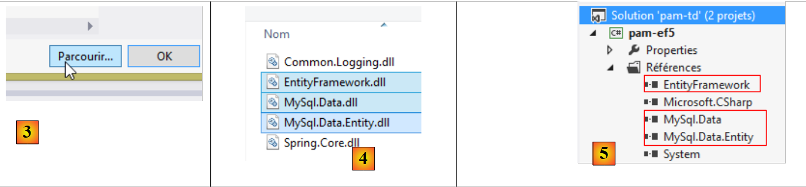 |
- en [3], on parcourt le système de fichiers jusqu'au dossier [lib] ;
- en [4], on sélectionne les trois DLL puis on valide deux fois ;
- en [5], les trois DLL ont été ajoutées au références du projet.
Il nous faut une autre DLL. Celle-ci sera trouvée parmi celles du framework .NET de la machine.
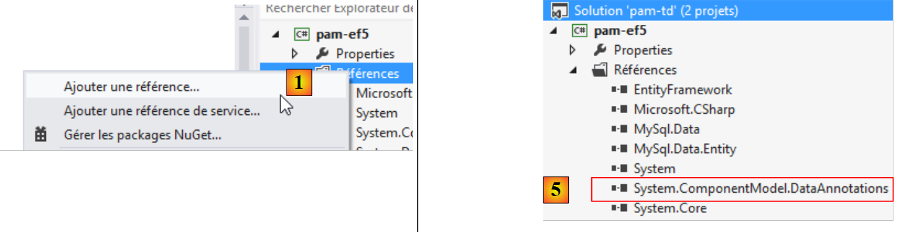 |
- en [1], ajoutez une nouvelle référence au projet ;
 |
- en [2], sélectionnez [Assemblys] ;
- en [3], tapez [system.component] ;
- en [4], sélectionnez l'assembly [System.ComponentModel.DataAnnotations] ;
- en [5], la référence a été ajoutée.
Nous sommes désormais prêts pour coder et configurer.
9.22.4. Les entités Entity Framework
Les entités Entity framework sont des classes dans lesquelles on encapsule les lignes des différentes tables de la base de données. Rappelons celles-ci :
Dans la couche [web], nous avions utilisé les entités [Employe, Cotisations, Indemnités] (voir paragraphe 9.7.3, page 219). Elles n'étaient pas des images fidèles des tables. Ainsi les colonnes [ID, VERSIONING] avaient été ignorées. Ici, ce ne va pas être le cas car elles sont utilisées par l'ORM EF5. Nous allons donc leur ajouter les propriétés manquantes. Nous créons ces entités dans un dossier [Models] du projet :
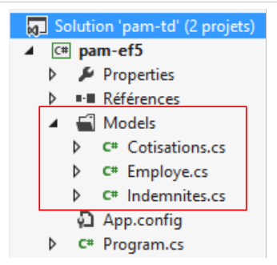 |
Leur nouveau code est désormais le suivant :
Classe [Cotisations]
using System;
namespace Pam.EF5.Entites
{
public class Cotisations
{
public int Id { get; set; }
public double CsgRds { get; set; }
public double Csgd { get; set; }
public double Secu { get; set; }
public double Retraite { get; set; }
public int Versioning { get; set; }
// signature
public override string ToString()
{
return string.Format("Cotisations[{0},{1},{2},{3}, {4}, {5}]", Id, Versioning, CsgRds, Csgd, Secu, Retraite);
}
}
}
- ligne 3 : l'espace de noms a été adapté au nouveau projet ;
- les propriétés des lignes 7 et 12 ont été rajoutées pour refléter la structure de la table [cotisations] ;
- ligne 17 : la méthode [ToString] affiche maintenant les deux nouveaux champs.
Classe [Indemnites]
using System;
namespace Pam.EF5.Entites
{
public class Indemnites
{
public int Id { get; set; }
public int Indice { get; set; }
public double BaseHeure { get; set; }
public double EntretienJour { get; set; }
public double RepasJour { get; set; }
public double IndemnitesCp { get; set; }
public int Versioning { get; set; }
// signature
public override string ToString()
{
return string.Format("Indemnités[{0},{1},{2},{3},{4}, {5}, {6}]", Id, Versioning, Indice, BaseHeure, EntretienJour, RepasJour, IndemnitesCp);
}
}
}
- ligne 3 : l'espace de noms a été adapté au nouveau projet ;
- les propriétés des lignes 7 et 13 ont été rajoutées pour refléter la structure de la table [indemnites] ;
- ligne 18 : la méthode [ToString] affiche maintenant les deux nouveaux champs.
Classe [Employe]
using System;
namespace Pam.EF5.Entites
{
public class Employe
{
public int Id { get; set; }
public string SS { get; set; }
public string Nom { get; set; }
public string Prenom { get; set; }
public string Adresse { get; set; }
public string Ville { get; set; }
public string CodePostal { get; set; }
public Indemnites Indemnites { get; set; }
public int Versioning { get; set; }
// signature
public override string ToString()
{
return string.Format("Employé[{0},{1},{2},{3},{4},{5}, {6}, {7}]", Id, Versioning, SS, Nom, Prenom, Adresse, Ville, CodePostal);
}
}
}
- ligne 3 : l'espace de noms a été adapté au nouveau projet ;
- les propriétés des lignes 8 et 16 ont été rajoutées pour refléter la structure de la table [employes] ;
- ligne 21 : la méthode [ToString] affiche maintenant les deux nouveaux champs.
Pour être utilisables par l'ORM EF5, les propriétés de ces classes doivent être décorées par des annotations.
Travail : en vous aidant du paragraphe 3.4 [Création de la base à partir des entités] de [refEF5], ajoutez aux entités [Employe, Cotisations, Indemnites] les annotations nécessaires à EF5.
Conseils :
- il s'agit seulement de créer des annotations. Ne suivez pas la partie [création de base] du paragraphe référencé ;
- pour l'annotation [Table], vous suivrez l'exemple MySQL du paragraphe 4.2 de [refEF5] ;
- pour l'annotation [ConcurrencyCheck] sur la propriété [Versioning], vous suivrez l'exemple Oracle du paragraphe 5.2 de [refEF5] ;
- pour la clé étrangère que possède la table [employes] sur la table [indemnités], vous suivrez l'exemple 3.4.2 de [refEF5]. Vous ajouterez ainsi une nouvelle propriété à l'entité [Employe] :
public int IndemniteId { get; set; }
dont la valeur sera celle de la colonne [INDEMNITES_ID] de la table [employes]. Vous mettrez aux propriétés [IndemniteId] et [Indemnites] de l'entité [Employe] les annotations de clé étrangère. Pour cela, suivez l'exemple 3.4.2 de [refEF5] ;
- vous ne gérerez pas les relations inverses des clés étrangères ;
- ce travail nécessite un peu de lecture de [refEF5].
9.22.5. Configuration de l'ORM EF5
Resituons le projet dans son ensemble :
 |
La couche [EF5] va accéder à la base de données via le connecteur [ADO.NET] du SGBD MySQL. Elle a besoin d'un certain nombre de renseignements pour accéder à cette base. Ceux-ci sont placés à divers endroits du projet.
Nous devons tout d'abord créer le contexte de la base de données. Ce contexte est une classe dérivée de la classe système [System.Data.Entity.DbContext]. Elle sert à définir les images objets des tables de la base de données. Nous placerons cette classe dans le dossier [Models] du projet avec les entités EF5 :
 |
La classe [DbPamContext] sera la suivante :
using Pam.EF5.Entites;
using System.Data.Entity;
namespace Pam.Models
{
public class DbPamContext : DbContext
{
public DbSet<Employe> Employes { get; set; }
public DbSet<Cotisations> Cotisations { get; set; }
public DbSet<Indemnites> Indemnites { get; set; }
}
}
- ligne 6 : la classe [DbPamContext] dérive de la classe système [DbContext] ;
- lignes 8-10 : les images objets des trois tables de la base de données. Leur type est [DbSet<Entity>] où [Entity] est une des entités Entity Framework que nous venons de définir. On peut voir le type [DbSet] comme une collection d'entités. Elle peut être requêtée avec LINQ (Language INtegrated Query). Le lecteur ne connaissant pas LINQ est invité à lire le paragraphe 3.5.4 [Apprentissage de LINQ avec LINQPad] de [refEF5].
Nous appellerons par la suite la classe [DbPamContext] contexte de persistance de la base de données [dbpam_ef5]. C'est une terminologie habituelle dans les ORM (Object Relational Mapper). Ce contexte de persistance est une image objet de la base de données. On parle également de synchronisation du contexte de persistance avec la base de données : les modifications, ajouts, suppressions faits sur le contexte de persistance sont répercutés sur la base de données. Cette synchronisation se fait à des moments précis : à la fermeture du contexte de persistance, à la fin d'une transaction ou avant une requête SQL SELECT sur la base.
Les informations sur le SGBD et la base de données sont placées dans [App.config].
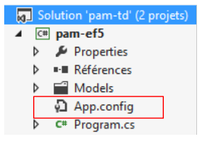 |
La configuration nécessaire dans [app.config] est expliquée aux paragraphes suivants de [refEF5] :
- 3.4 pour le SGBD SQL Server. C'est là que les grands principes de la configuration d'EF5 sont posés ;
- 4.2 pour le SGBD MySQL.
Nous suivons ce dernier paragraphe et nous configurons le fichier [app.config] de la façon suivante :
<?xml version="1.0" encoding="utf-8" ?>
<configuration>
<startup>
<supportedRuntime version="v4.0" sku=".NETFramework,Version=v4.5" />
</startup>
<!-- configuration EF5 -->
<!-- chaîne de connexion à la base de données [dbam_ef5] -->
<connectionStrings>
<add name="DbPamContext"
connectionString="Server=localhost;Database=dbpam_ef5;Uid=root;Pwd=;"
providerName="MySql.Data.MySqlClient" />
</connectionStrings>
<!-- le factory provider de MySQL -->
<system.data>
<DbProviderFactories>
<remove invariant="MySql.Data.MySqlClient"/>
<add name="MySQL Data Provider" invariant="MySql.Data.MySqlClient" description=".Net Framework Data Provider for MySQL"
type="MySql.Data.MySqlClient.MySqlClientFactory, MySql.Data, Version=6.5.4.0, Culture=neutral, PublicKeyToken=C5687FC88969C44D"
/>
</DbProviderFactories>
</system.data>
</configuration>
- les lignes 6-21 ont été ajoutées. Elles doivent s'insérer dans la balise <configuration> des lignes 2 et 22 ;
- lignes 8-12 : définissent des chaînes de connexion à des bases de données, un concept ADO.NET (voir paragraphe 7.3.5 dans [refC#]) ;
- lignes 9-11 : définissent la chaîne de connexion à la base de données MySQL [dbpam_ef5] ;
- ligne 9 : le nom de la chaîne de connexion. Ici, on ne peut pas mettre n'importe quoi. Par défaut, il faut mettre le nom de la classe implémentant le contexte de la base de données :
public class DbPamContext : DbContext
{
public DbSet<Employe> Employes { get; set; }
public DbSet<Cotisations> Cotisations { get; set; }
public DbSet<Indemnites> Indemnites { get; set; }
}
La classe s'appelle [DbPamContext]. Ligne 9 de [app.config], il faut alors mettre [name="DbPamContext"] ;
- ligne 10 : une chaîne de connexion propre au SGBD MySQL :
- [Server=localhost] : adresse IP de la machine hébergeant le SGBD. Ici c'est la machine locale [localhost] ;
- [Database=dbpam_ef5;] : nom de la base de données,
- [Uid=root;] : login avec lequel on va se connecter à la base,
- [Pwd=;] : mot de passe de ce login. Ici pas de mot de passe ;
- ligne 10 : [providerName="MySql.Data.MySqlClient"] est le nom du connecteur ADO.NET à utiliser. Ce nom est celui de l'attribut [invariant] de la ligne 17. On peut mettre n'importe quoi tant qu'on respecte la règle précédente et qu'un provider de même invariant n'ait pas déjà été enregistré ;
- lignes 15-20 : définissent une usine (factory) de connecteurs (provider) ADO.NET. Le [DbProviderFactory] est un concept un peu nébuleux pour moi. Si j'en crois son nom, ce serait une classe capable de générer le connecteur ADO.NET qui donne accès au SGBD, ici MySQL5. On fait en général du copier / coller de ces lignes. Elles sont nécessaires. On fera attention à l'attribut [Version=6.5.4.0] de la ligne 16. Ce n° de version doit correspondre au n° de version de la DLL [MySql.Data] que vous avez ajoutée aux références du projet :
 |
- la ligne 16 est importante. Parce qu'on ne peut pas installer deux providers de mêmes noms, on commence par supprimer un éventuel provider installé qui porterait le nom de celui qu'on installe ligne 17 ;
C'est tout. C'est compliqué et obscur lorsqu'on le fait la première fois, puis au fil du temps cela devient simple car c'est toujours la même chose que l'on répète.
9.22.6. Test de la couche [EF5]
Nous sommes prêts à tester notre couche [EF5]. On le fait à l'aide du programme [Program.cs] déjà présent :
 |
Nous allons afficher le contenu de la base. Si on y arrive ce sera un début d'indication que notre configuration est correcte. Un exemple de code est disponible au paragraphe 3.5.3 de [refEF5]. Le code de [Program.cs] sera le suivant :
using Pam.EF5.Entites;
using Pam.Models;
using System;
namespace Pam
{
class Program
{
static void Main(string[] args)
{
try
{
using (var context = new DbPamContext())
{
// on affiche le contenu des tables
Console.WriteLine("Liste des employés ----------------------------------------");
foreach (Employe employe in context.Employes)
{
Console.WriteLine(employe);
}
Console.WriteLine("Liste des indemnités --------------------------------------");
foreach (Indemnites indemnite in context.Indemnites)
{
Console.WriteLine(indemnite);
}
Console.WriteLine("Liste des cotisations -------------------------------------");
foreach (Cotisations cotisations in context.Cotisations)
{
Console.WriteLine(cotisations);
}
}
}
catch (Exception e)
{
Console.WriteLine(e);
return;
}
}
}
}
- ligne 13 : toute opération sur la BD se fait au travers du contexte de cette base. Nous avons implémenté ce contexte avec la classe [DbPamContext]. Nous l'avons appelé également contexte de persistance de la base ;
- lignes 13, 31 : les opérations sur le contexte de persistance se font dans une clause [using]. Le contexte de persistance est ouvert au début de la clause [using] et automatiquement fermé à la sortie de cette clause. Cela implique que toute modification faite sur le contexte de persistance dans la clause [using] sera répercutée sur la base de données à la sortie de la clause. Une série d'ordres SQL est alors envoyée à la BD à l'intérieur d'une transaction. Ce qui veut dire que si un ordre SQL échoue, tous les ordres SQL émis précédemment sont annulés. Une exception est alors lancée par EF5 ;
- ligne 17 : l'expression [context.Employes] désigne l'image objet de la table [employes]. On rappelle que [Employes] est une propriété du contexte de persistance [DbPamContext] :
public class DbPamContext : DbContext
{
public DbSet<Employe> Employes { get; set; }
public DbSet<Cotisations> Cotisations { get; set; }
public DbSet<Indemnites> Indemnites { get; set; }
}
- ligne 17 : le fait que le [foreach] parcourt la collection [context.Employes] va ramener tous les employés de la base de données dans le contexte de persistance. Un ordre SQL SELECT va donc être émis par EF5 ;
- lignes 17-20 : on parcourt la collection des employés et ligne 19, on utilise la méthode [ToString] de la classe [Employe] pour afficher les employés sur la console ;
- lignes 21-25 : idem pour la collection des indemnités ;
- lignes 27-30 : idem pour la collection des cotisations.
Revenons sur la définition de l'entité [Employe] :
using System;
namespace Pam.EF5.Entites
{
public class Employe
{
public int Id { get; set; }
public string SS { get; set; }
public string Nom { get; set; }
public string Prenom { get; set; }
public string Adresse { get; set; }
public string Ville { get; set; }
public string CodePostal { get; set; }
public Indemnites Indemnites { get; set; }
public int Versioning { get; set; }
// signature
public override string ToString()
{
return string.Format("Employé[{0},{1},{2},{3},{4},{5}, {6}, {7}]", Id, Versioning, SS, Nom, Prenom, Adresse, Ville, CodePostal);
}
}
}
- ligne 15 : un employé a une référence sur une indemnité.
Lorsqu'on ramène un employé dans le contexte de persistance, ramène-t-on son indemnité avec ? La réponse est non par défaut. C'est la notion de [Lazy Loading]. Les entités référencées au sein d'une autre entité ne sont pas amenées dans le contexte de persistance avec cette autre entité. Elles ne le sont que lorsqu'elles sont demandées par le code au sein d'un contexte de persistance ouvert. Si le contexte de persistance est fermé, une exception est alors lancée.
Ainsi, si la méthode [ToString] avait référencé la propriété [Indemnites] comme ci-après :
// signature
public override string ToString()
{
return string.Format("Employé[{0},{1},{2},{3},{4},{5},{6},{7},{8}]", Id, Versioning, SS, Nom, Prenom, Adresse, Ville, CodePostal, Indemnites);
}
l'opération suivante dans [Program.cs] :
foreach (Employe employe in context.Employes)
{
Console.WriteLine(employe);
}
aurait ramené dans le contexte de persistance non seulement les employés mais également leurs indemnités, parce que ligne 3, la méthode [Employe.ToString] est appelée et qu'elle référence l'entité [Indemnites].
L'exécution de [Program.cs] donne les résultats suivants :
Que faire si ça ne marche pas ? Vous êtes mal... Il y a de nombreuses sources d'erreur possibles :
- vérifiez la configuration d'EF5 (paragraphe 9.22.5) ;
- vérifiez vos entités Entity Framework (paragraphe 9.22.4).
9.22.7. DLL de la couche [EF5]
Nous faisons de notre projet une bibliothèque de classes afin qu'à la génération, un assembly .dll soit généré plutôt qu'un .exe. Cela se fait dans les propriétés du projet comme il a été vu au paragraphe 9.7.6, pour la couche métier simulée.
Travail : transformez le type du projet [pam-ef5] en bibliothèque de classes puis régénérez le projet.
9.23. Étape 16 : mise en place de la couche [DAO]
9.23.1. L'interface de la couche [DAO]
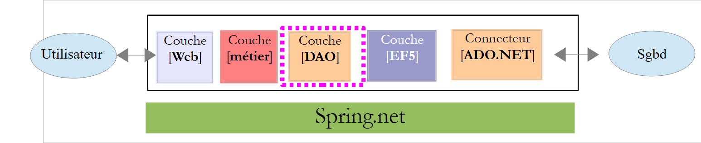 |
Comme nous l'avions fait pour la couche [métier] simulée, la couche [DAO] sera accessible via une interface. Quelle sera-t-elle ?
Regardons l'interface [IPamMetier] de la couche [métier] simulée que nous avons construite :
public interface IPamMetier {
// liste de toutes les identités des employés
Employe[] GetAllIdentitesEmployes();
// ------- le calcul du salaire
FeuilleSalaire GetSalaire(string ss, double heuresTravaillées, int joursTravaillés);
}
Ligne 3, la méthode [GetAllIdentitesEmployes] sert à alimenter la liste déroulante de la page d'accueil :
 |
Ces employés devront être cherchés dans la base de données.
Ligne 6, la méthode [GetSalaire] permet de calculer la feuille de salaire d'un employé dont on a le n° SS. Rappelons la définition du type [FeuilleSalaire] :
public class FeuilleSalaire
{
// propriétés automatiques
public Employe Employe { get; set; }
public Cotisations Cotisations { get; set; }
public ElementsSalaire ElementsSalaire { get; set; }
}
Les informations des lignes 5 et 6 viendront de la base de données. Rappelons qu'un employé a une propriété [Indemnites]. Cette information devra être ramenée également.
On pourrait donc partir avec l'interface suivante pour la couche [DAO] :
public interface IPamDao {
// liste de toutes les identités des employés
Employe[] GetAllIdentitesEmployes();
// un employé particulier avec ses indemnités
Employe GetEmploye(string ss);
// liste de toutes les cotisations
Cotisations GetCotisations();
}
9.23.2. Le projet Visual Studio
Travail : ajouter à la solution [pam-td] un nouveau projet de type [console] appelé [pam-dao]. Faites-en le projet de démarrage de la solution.
 |
9.23.3. Ajout des références nécessaires au projet
Situons le projet dans son ensemble :
 |
Le projet [pam-dao] a besoin d'un certain nombre de DLL :
- toutes celles référencées par le projet [pam-ef5] ;
- celle du projet [pam-ef5] lui-même.
Par ailleurs, nous allons utiliser [Spring.net] pour instancier la couche [DAO]. Pour cela, nous avons besoin des DLL [Spring.core] et [Common.Logging]. Ces DLL sont dans le dossier [lib] du support de l'étude de cas.
Travail : ajoutez ces différentes références au projet [pam-dao].
 |
9.23.4. Implémentation de la couche [DAO]
 |
Ci-dessus, la classe [PamException] est celle qui a été définie au paragraphe 9.7.4. On change simplement son espace de noms (ligne 1 ci-dessous) :
namespace Pam.Dao.Entites
{
// classe d'exception
public class PamException : Exception
{
....
}
}
L'interface [IPamDao] est celle que nous venons de définir au paragraphe 9.23.1 :
using Pam.EF5.Entites;
namespace Pam.Dao.Service
{
public interface IPamDao
{
// liste de toutes les identités des employés
Employe[] GetAllIdentitesEmployes();
// un employé particulier avec ses indemnités
Employe GetEmploye(string ss);
// liste de toutes les cotisations
Cotisations GetCotisations();
}
}
La classe [PamDaoEF5] implémente cette interface à l'aide de l'ORM EF5. Son code est le suivant :
using Pam.Dao.Entites;
using Pam.EF5.Entites;
using Pam.Models;
using System;
using System.Linq;
namespace Pam.Dao.Service
{
public class PamDaoEF5 : IPamDao
{
// champs privés
private Cotisations cotisations;
private Employe[] employes;
// Constructeur
public PamDaoEF5()
{
// cotisation
try
{
....
}
catch (Exception e)
{
throw new PamException("Erreur système lors de la construction de la couche [DAO]", e, 1);
}
}
// GetCotisations
public Cotisations GetCotisations()
{
return cotisations;
}
// GetAllIdentitesEmploye
public Employe[] GetAllIdentitesEmployes()
{
return employes;
}
// GetEmploye
public Employe GetEmploye(string SS)
{
try
{
....
catch (Exception e)
{
throw new PamException(string.Format("Erreur système lors de la recherche de l'employé [{0}]", SS), e, 2);
}
}
}
}
A savoir :
- ligne 10 : la classe [PamDaoEF5] implémente l'interface [IPamDao] ;
- les tables [cotisations] et [employes] sont mises en cache dans les propriétés des lignes 13-14. Les employés sont sans leurs indemnités ;
- lignes 17-28 : c'est le constructeur qui initialise les lignes 13-14 ;
- lignes 43-52 : la méthode [GetEmploye] ramène un employé avec ses indemnites. Elle reçoit en paramètre le n° de sécurité sociale de cet employé. Si l'employé n'existe pas dans la base, la méthode rendra le pointeur null.
Travail : compléter le code de la classe [PamDaoEF5].
Pour le constructeur, on s'inspirera du code de test de la couche [EF5] présenté au paragraphe 9.22.6. Pour la méthode [GetEmploye] on s'inspirera de l'exemple du paragraphe 3.5.7 [Eager and Lazy loading] de [refEF5].
9.23.5. Configuration de la couche [DAO]
Comme il a été fait au paragraphe 9.22.5, il nous faut configurer EF5 dans le fichier [App.config] du projet :
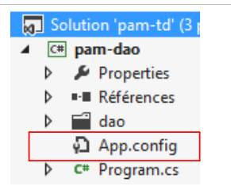 |
Travail 1 : configurez EF5 dans [App.config]. Il suffit de reprendre ce qui a été fait dans le fichier [App.config] de la couche [EF5].
Notre programme de test va utiliser [Spring.net] pour obtenir une référence sur la couche [DAO].
Travail 2 : en vous aidant de ce qui a été fait au paragraphe 9.20.2, modifiez le fichier de configuration [app.config] du projet [pam-dao] afin qu'il définisse un objet Spring appelé [pamdao] associé à la classe [PamDaoEF5] que nous venons de construire. Les fichiers [app.config] et [web.config] ont la même structure. Il faut faire attention à ce que la balise <configSections> soit la première balise rencontrée derrière la balise racine <configuration>.
9.23.6. Test de la couche [DAO]
Nous sommes prêts à tester notre couche [DAO]. On le fait à l'aide du programme [Program.cs] déjà présent :
 |
Nous allons tester les différentes fonctionnalités de l'interface de la couche [DAO]. Le code de [Program.cs] sera le suivant :
using Pam.Dao.Service;
using Pam.EF5.Entites;
using Spring.Context.Support;
using System;
namespace Pam.Dao.Tests
{
public class Program
{
public static void Main()
{
try
{
// instanciation couche [dao]
IPamDao pamDao = (IPamDao)ContextRegistry.GetContext().GetObject("pamdao");
// liste des identités des employés
foreach (Employe Employe in pamDao.GetAllIdentitesEmployes())
{
Console.WriteLine(Employe.ToString());
}
// un employé avec ses indemnités
Console.WriteLine("------------------------------------");
Employe e = pamDao.GetEmploye("254104940426058");
Console.WriteLine("employé= {0}, indemnités={1}", e, e.Indemnites);
Console.WriteLine("------------------------------------");
// un employé qui n'existe pas
Employe employe = pamDao.GetEmploye("xx");
Console.WriteLine("Employé n° xx");
Console.WriteLine((employe == null ? "null" : employe.ToString()));
Console.WriteLine("------------------------------------");
// liste des cotisations
Cotisations cotisations = pamDao.GetCotisations();
Console.WriteLine(cotisations.ToString());
}
catch (Exception ex)
{
// affichage exception
Console.WriteLine(ex.ToString());
}
//pause
Console.ReadLine();
}
}
}
- ligne 15 : on obtient une référence sur la couche [DAO] grâce à [Spring.net].
Les résultats de l'exécution de ce programme sont les suivants :
9.23.7. DLL de la couche [DAO]
Travail : transformez le type du projet [pam-dao] en bibliothèque de classes puis régénérez le projet (refaire ce qui a été fait au paragraphe 9.22.7).
9.24. Étape 17 : mise en place de la couche [métier]
9.24.1. L'interface de la couche [métier]
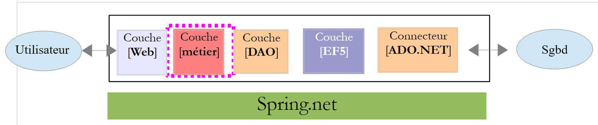 |
L'interface de la couche [métier] sera l'interface [IPamMetier] de la couche [métier] simulée que nous avons construite au paragraphe 9.7.2.
public interface IPamMetier {
// liste de toutes les identités des employés
Employe[] GetAllIdentitesEmployes();
// ------- le calcul du salaire
FeuilleSalaire GetSalaire(string ss, double heuresTravaillées, int joursTravaillés);
}
9.24.2. Le projet Visual Studio
Travail : ajouter à la solution [pam-td] un nouveau projet de type [console] appelé [pam-metier]. Faites-en le projet de démarrage de la solution.
 |
9.24.3. Ajout des références nécessaires au projet
Situons le projet dans son ensemble :
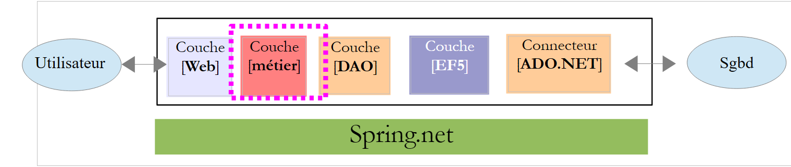 |
Le projet [pam-metier] a besoin d'un certain nombre de DLL :
- toutes celles référencées par les projets [pam-dao] et [pam-ef5] ;
- celles des projets [pam-dao] et [pam-ef5] eux-mêmes.
Travail : ajoutez ces différentes références au projet [pam-metier].
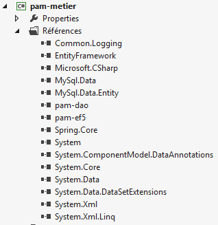 |
9.24.4. Implémentation de la couche [métier]
 |
Ci-dessus, on retrouve quatre éléments déjà utilisés dans la couche [métier] simulée (voir paragraphe 9.7). Il peut y avoir des changements pour les espaces de noms importés par ces différentes classes. Gérez-les. La classe [PamMetier] implémente l'interface [IPamMetier] de la façon suivante :
using Pam.Dao.Service;
using Pam.EF5.Entites;
using Pam.Metier.Entites;
using System;
namespace Pam.Metier.Service
{
public class PamMetier : IPamMetier
{
// référence sur la couche [DAO] initialisée par Spring
public IPamDao PamDao { get; set; }
// liste de toutes les identités des employés
public Employe[] GetAllIdentitesEmployes()
{
...
}
// un employé particulier avec ses indemnités
public Employe GetEmploye(string ss)
{
...
}
// les cotisations
public Cotisations GetCotisations()
{
...
}
// calcul du salaire
public FeuilleSalaire GetSalaire(string ss, double heuresTravaillées, int joursTravaillés)
{
// SS : n° SS de l'employé
// HeuresTravaillées : le nombre d'heures travaillés
// Jours Travaillés : nbre de jours travaillés
...
}
}
- ligne 13 : on a une référence sur la couche [DAO]. Elle sera initialisée par Spring lors de l'instanciation de la classe [PamMetier]. Donc lorsque les différentes méthodes s'exécutent, la ligne 13 a déjà été initialisée.
Travail : compléter le code de la classe [PamMetier]. Si dans [GetSalaire] on découvre que l'employé de n° ss n'existe pas, on lancera une [PamException]. Le mode de calcul du salaire est expliqué au paragraphe 9.5. On fera attention d'arrondir tous les calculs intermédiaires à deux chiffres après la virgule.
9.24.5. Configuration de la couche [métier]
Comme il a été fait au paragraphe 9.22.5, il nous faut configurer EF5 dans le fichier [app.config] du projet :
 |
Travail 1 : configurez EF5 dans [app.config]. Il suffit de reprendre ce qui a été fait dans le fichier [app.config] de la couche [EF5].
Notre programme de test va utiliser [Spring.net] pour obtenir une référence sur la couche [métier].
Travail 2 : en vous aidant de ce que vous avez fait précédemment au paragraphe 9.23.5, modifiez le fichier de configuration [app.config] du projet [pam-metier] afin qu'il définisse un objet Spring appelé [pammetier] associé à la classe [PamMetier] que nous venons de construire. Le plus simple est de recopier le fichier [app.config] du projet [pam-dao] et d'ajouter ce qui manque.
Il y a une difficulté ici. Non seulement, il faut instancier la couche [métier] avec la classe [PamMetier] mais il faut également initialiser sa propriété [PamDao] :
// référence sur la couche [DAO] initialisée par Spring
public IPamDao PamDao { get; set; }
La configuration de Spring dans [app.config] est alors la suivante :
<spring>
<context>
<resource uri="config://spring/objects" />
</context>
<objects xmlns="http://www.springframework.net">
<object id="pamdao" type=" Pam.Dao.Service.PamDaoEF5, pam-dao"/>
<object id="pammetier" type="Pam.Metier.Service.PamMetier, pam-metier">
<property name="PamDao" ref="pamdao" />
</object>
</objects>
</spring>
- ligne 6 : définit l'objet [pamdao] asssocié à la classe [PamDaoEF5] ;
- ligne 7 : définit l'objet [pammetier] asssocié à la classe [PamMetier] ;
- ligne 8 : la balise [property] sert à initialiser une propriété publique de la classe [PamMetier]. L'attribut [name="PamDao"] correspond au nom de la propriété à initialiser dans la classe [PamMetier]. L'attribut [ref="pamdao"] indique que la propriété est initialisée avec une référence, celle de l'objet [pamdao] de la ligne 6, donc avec la référence de la couche [DAO]. C'est ce que nous voulions.
9.24.6. Test de la couche [métier]
Nous sommes prêts à tester notre couche [métier]. On le fait à l'aide du programme [Program.cs] déjà présent :
 |
Nous allons tester les différentes fonctionnalités de l'interface de la couche [métier]. Le code de [Program.cs] sera le suivant :
using System;
using Pam.Dao.Entites;
using Pam.Metier.Service;
using Spring.Context.Support;
using Pam.EF5.Entites;
namespace Pam.Metier.Tests
{
public class Program
{
public static void Main()
{
try
{
// instanciation couche [métier]
IPamMetier pamMetier = ContextRegistry.GetContext().GetObject("pammetier") as IPamMetier;
// liste des identités des employés
Console.WriteLine("Employés -----------------------------");
foreach (Employe Employe in pamMetier.GetAllIdentitesEmployes())
{
Console.WriteLine(Employe);
}
// calculs de feuilles de salaire
Console.WriteLine("salaires -----------------------------");
Console.WriteLine(pamMetier.GetSalaire("260124402111742", 30, 5));
Console.WriteLine(pamMetier.GetSalaire("254104940426058", 150, 20));
try
{
Console.WriteLine(pamMetier.GetSalaire("xx", 150, 20));
}
catch (PamException ex)
{
Console.WriteLine(string.Format("PamException : {0}", ex.Message));
}
}
catch (Exception ex)
{
Console.WriteLine(string.Format("Exception : {0}, Exception interne : {1}", ex.Message, ex.InnerException == null ? "" : ex.InnerException.Message));
}
// pause
Console.ReadLine();
}
}
}
- ligne 16 : on obtient une référence sur la couche [métier] grâce à [Spring.net].
Les résultats de l'exécution de ce programme sont les suivants :
9.24.7. DLL de la couche [métier]
Travail : transformez le type du projet [pam-metier] en bibliothèque de classes puis régénérez le projet (refaire ce qui a été fait au paragraphe 9.22.7).
9.25. Étape 18 : mise en place de la couche [web]
Nous arrivons à la dernière couche de notre architecture, la couche [web] :
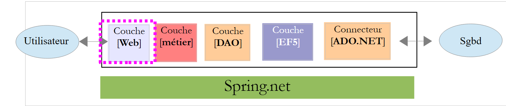 |
Nous allons réutiliser la couche [web] que nous avions développée avec l'aide d'une couche [métier] simulée.
9.25.1. Le projet Visual Studio
Nous revenons à Visual Studio Express 2012 pour le web afin de brancher notre couche web aux couches [métier, DAO, EF5] que nous venons de développer. Il y a surtout de la configuration à faire et quelques changements d'espaces de noms.
Avec Visual Studio Express 2012 pour le web, chargez la solution [pam-td] :
 |
- en [1], la solution [pam-td] dans VS Studio pour le web. Le projet web [pam-web-01] redevient visible. On l'avait perdu dans VS Studio pour le bureau.
- la configuration du projet web [pam-web-01] va devoir être modifiée. Plutôt que de modifier un projet qui fonctionne, on va faire les modifications sur une copie de ce projet. Tout d'abord en [2], on supprime le projet de la solution (ça ne supprime rien dans le système de fichiers).
 |
- en [3], avec l'explorateur windows, on duplique le dossier [pam-web-01] dans [pam-web-02] ;
- en [4], on charge le projet [pam-web-02] dans la solution [pam-td]. Il arrive avec le nom [pam-web-01] ;
- en [5], changez ce nom en [pam-web-02] et faites de ce projet le projet de démarrage ;
 |
- en [6], chargez l'ancien projet [pam-web-01]. Vous avez désormais tous vos projets. Faites attention de travailler avec [pam-web-02].
9.25.2. Ajout des références nécessaires au projet
Situons le projet dans son ensemble :
 |
Le projet [pam-web-02] a besoin d'un certain nombre de DLL :
- toutes celles référencées par les projets [pam-metier], [pam-dao] et [pam-ef5] ;
- celles des projets [pam-metier], [pam-dao] et [pam-ef5] eux-mêmes.
Travail : ajoutez ces différentes références au projet [pam-web-02]. La référence sur le projet [pam-metier-simule] doit elle être enlevée. On change de couche [métier]. Certaines DLL sont déjà présentes dans les références. Supprimez-les puis faites vos ajouts.
 |
9.25.3. Implémentation de la couche [web]
Générez le projet [pam-web-02]. Des erreurs vont apparaître telles que la suivante :
 |
La classe [ApplicationModel] utilise le type [Employe]. Avec la couche [métier] simulée, ce type était défini dans l'espace de noms [Pam.Metier.Entites]. Il est désormais dans l'espace de noms [Pam.EF5.Entites]. Corrigez ces erreurs comme montré ci-dessus.
9.25.4. Configuration de la couche [web]
Comme il a été fait au paragraphe 9.24.5, il nous faut configurer EF5 dans le fichier [web.config] du projet :
 |
Travail 1 : remplacez tout le contenu actuel de [web.config] par celui du fichier [app.config] du projet [pam-metier].
Le fichier [Global.asax] de notre application web utilise [Spring.net] pour récupérer une référence sur la couche [métier] :
try
{
// instanciation couche [métier]
application.PamMetier = ContextRegistry.GetContext().GetObject("pammetier") as IPamMetier;
}
catch (Exception ex)
{
application.InitException = ex;
}
Ligne 4, on demande une référence sur l'objet Spring nommé [pammetier]. C'est bien ce nom qui a été donné à la couche [métier] (vérifiez-le dans votre fichier [web.config]).
9.25.5. Test de la couche [web]
Nous sommes prêts à tester notre couche [web]. Nous allons d'abord changer son port de travail. Par défaut, [pam-web-02] a la configuration de [pam-web-01] et donc travaille sur le même port. L'expérience montre que cela pose problème : IIS continue alors à utiliser les codes du projet [pam-web-01]. Procédez de la façon suivante :
 |
 |
En [4], changez le n° du port, par exemple en changeant le chiffre des unités.
On exécute le projet [pam-web-02] par [Ctrl-F5]. On obtient alors la page d'accueil suivante :
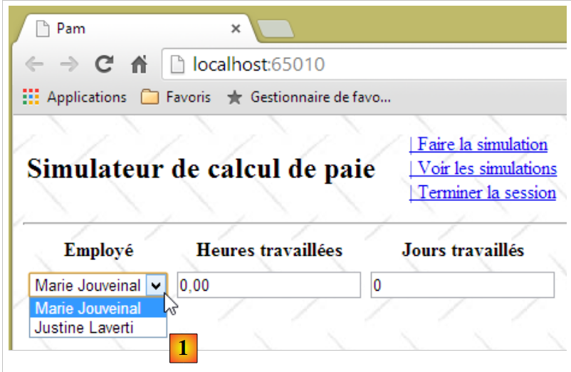 |
En [1], on obtient les employés de la base de données [dbpam_ef5]. On remarquera qu'on n'a plus l'employé [X X] que nous avions avec la couche [métier] simulée. Faisons une simulation :
 |
En [2], on obtient bien le salaire réel et non plus un salaire fictif. Maintenant arrêtons le SGBD MySQL5 et faisons une autre simulation :
 |
En [3], on a obtenu une page d'erreurs lisible même si certains messages sont en anglais. Maintenant arrêtons de nouveau MySQL et réexécutons l'application dans VS par [Ctrl-F5] :
 |
On obtient la vue [initFailed.cshtml] construite au paragraphe 9.20.4. Elle affiche les messages d'erreurs de la pile d'exceptions. Le lecteur est invité à faire d'autres tests.
9.26. Étape 19 : rendre accessible sur Internet une application ASP.NET
Lorsqu'on développe une application ASP.NET avec Visual Studio, la configuration utilisée par défaut fait que l'application développée n'est accessible qu'à l'adresse [localhost]. Toute autre adresse est refusée par le serveur embarqué de Visual Studio qui renvoie alors l'erreur [400 Bad Request].
On peut le voir de la façon suivante ;
- dans une fenêtre DOS, notez l'adresse IP de votre machine de développement :
Microsoft Windows [version 6.3.9600]
(c) 2013 Microsoft Corporation. Tous droits réservés.
dos>ipconfig
Configuration IP de Windows
Carte Ethernet Connexion au réseau local :
Suffixe DNS propre à la connexion. . . : ad.univ-angers.fr
Adresse IPv6 de liaison locale. . . . .: fe80::698b:455a:925:6b13%4
Adresse IPv4. . . . . . . . . . . . . .: 172.19.81.34
Masque de sous-réseau. . . . . . . . . : 255.255.0.0
Passerelle par défaut. . . . . . . . . : 172.19.0.254
Carte réseau sans fil Wi-Fi :
Statut du média. . . . . . . . . . . . : Média déconnecté
Suffixe DNS propre à la connexion. . . :
L'adresse IP est ici indiquée ligne 14. Si vous avez une connexion wifi, l'adresse wifi du poste apparaîtra lignes 20 et suivantes.
- vérifiez les propriétés du projet [clic droit sur projet / propriétés / onglet web] :
 |
L'application va s'exécuter sur le port [65010] de la machine [localhost].
- exécutez votre projet par [Ctrl-F5]

- remplacez [localhost] par l'adresse IP du poste :

Le serveur a renvoyé une réponse [400 Bad Request]. Le serveur IIS Express utilisé par Visual Studio n'accepte que le nom [localhost].
Pour rendre accessible l'application développée, à une URL du type [http://adresseIP/contexte/...], il faut utiliser un autre serveur que IIS Express, par exemple un serveur IIS (pas Express). Pour vérifier la présence de celui-ci (normalement dans les versions Pro de windows), il faut aller dans le panneau de configuration [Panneau de configuration\Système et sécurité\Outils d’administration] :
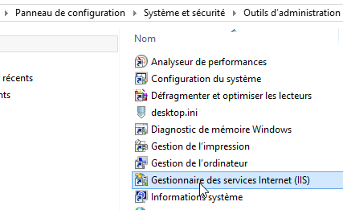
Cette option n'est pas toujours présente. Il faut alors aller dans [ Panneau de configuration \ Programmes] et installer les Outils d'administration web.
 |
Une fois l'option [Gestionnaire des services internet (IIS)] présente, on l'active :
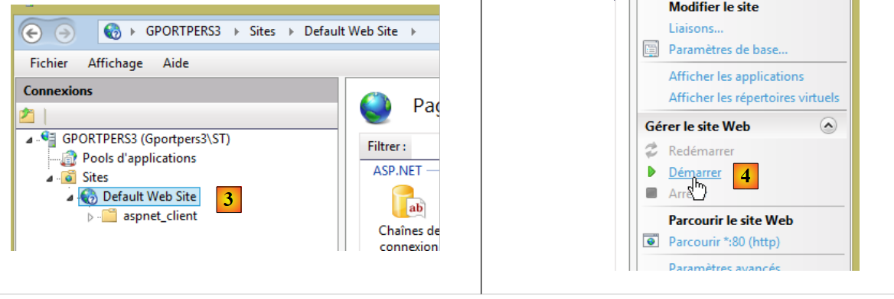 |
On démarre le site web par défaut. Pour cela, il faut que le service [Service de publication World Wide Web] soit auparavant lancé :
 |
Ceci fait, demandez l'URL [http://localhost] avec un navigateur. Vérifiez auparavant qu'un autre serveur web n'occupe pas déjà le port 80. Si oui, arrêtez le.
 |
Le serveur IIS nous a répondu. Maintenant remplacez [localhost] par l'adresse IP de votre poste :
 |
Ca marche. Revenons maintenant à Visual Studio :
- tout d'abord, il faut lancer Visual studio en mode [administrateur]
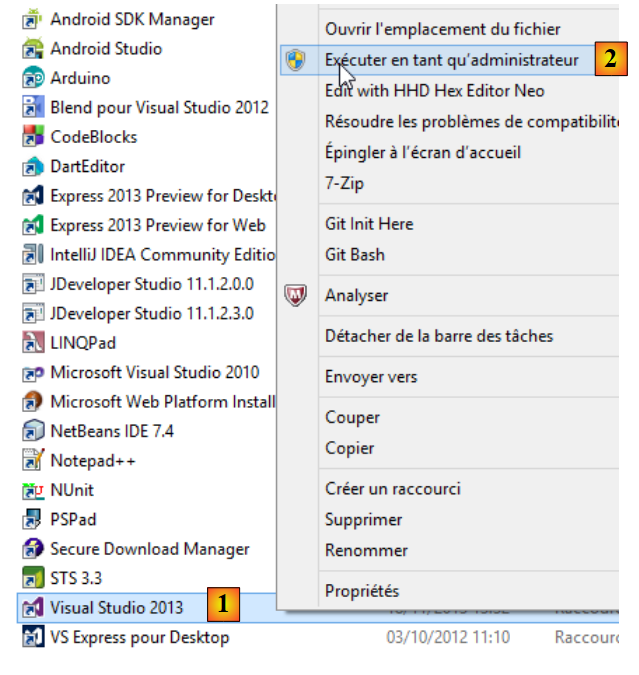 |
Ceci fait, il faut changer la configuration du projet web qu'on veut déployer [clic droit sur projet / propriétés / onglet web] :
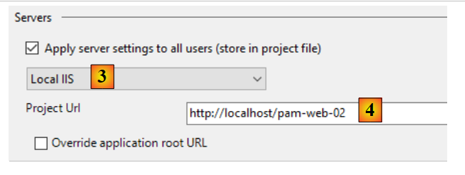 |
Il faut choisir le serveur IIS local comme serveur de déploiement. Visual studio fixe l'URL de l'application. On peut la changer. Exécutez le projet par [Ctrl-F5] :
 |
Remplacez maintenant [localhost] par l'adresse IP de votre poste :
 |
Si on ne dispose pas du serveur IIS, on pourra utiliser un serveur ASP.NET gratuit tel [Ultidev Web Server Pro] disponible à l'URL [http://ultidev.com/Download/ ]. Une fois installé, il y a deux méthodes pour lancer une application web avec ce serveur :
La manière rapide
Prenez un explorateur windows et sélectionnez le dossier de l'application ASP.NET à déployer :
 |
Le serveur web est alors lancé et l'application web affichée dans un navigateur :
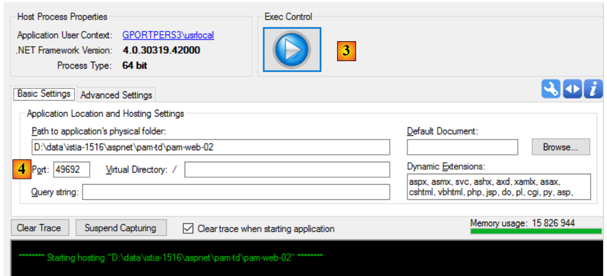 |
- en [3], on peut arrêter / lancer le serveur web ;
- en [4], on peut changer le port de service de l'application web ;
Avant de lancer le serveur, il faut que le service [UWS HiPriv Services] ci-dessous soit lancé :
 |
Une fois le serveur lancé, l'interface se présente de la façon suivante :
 |
Un clic sur le lien [6] affiche la 1ère page de l'application :
 |
On peut alors mettre l'adresse IP de la machine à la place de [localhost] :
 |
Donc là également, seul le nom [localhost] est accepté.
La manière longue
Lancez l'application Ultidev Web Explorer
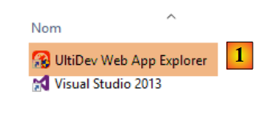 |
puis suivez les étapes suivantes :
 |
 |
 |
- en [8], désignez le dossier de l'application web à déployer ;
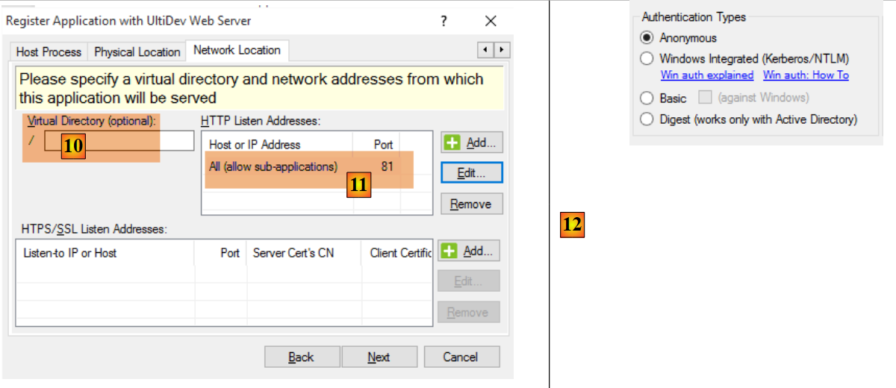 |
- à cause de [10-11], l'application web devra être demandée avec l'URL [http://localhost:81/];
 |
 |
- lancez le serveur web avec [14] ;
 |
- demandez l'URL [19] ;
 |
- en [20], on a obtenu la page désirée en utilisant l'adresse IP locale de la machine plutôt que le nom [localhost]. C'est ce que nous cherchions ;
Le serveur Ultidev s'est installé sous la forme d'un service Windows qui se lance automatiquement. Vous pouvez inhiber le démarrage automatique du serveur Ultidev de la façon suivante :
- prendre l'option [Panneau de configuration\Système et sécurité\Outils d’administration] ;
 |
- [1, 2] : sélectionnez les propriétés du service [Ultidev Web Server Pro] ;
- [3] : le mettre en démarrage manuel.
Pour lancer manuellement le serveur, utilisez par exemple l'application [Ultidev Web Explorer] :
 |
9.27. Étape 20 : génération d'une application native pour Android
Lorsqu'on a une application web de type APU (Aplication à Page Unique), il est possible de produire un exécutable pour mobile (Android, IoS, Windows 8, ...) avec l'outil [Phonegap] [http://phonegap.com/]. Il y a d'autres façons de faire, notamment avec le produit Open Source Apache Cordova [https://cordova.apache.org/]. L'outil présent en ligne sur le site de Phonegap [http://build.phonegap.com/apps] 'uploade' le fichier zip du site à convertir. La page d'accueil doit s'appeler [index.html] et doit être une page statique, ç-à-d ne pas être générée par un framework web (ASP.NET, JEE, PHP, ...). Nous allons commencer par construire celle-ci.
9.27.1. L'architecture de l'application
Il faut se rappeler ici que l'on veut créer une application Android. Une telle application a souvent l'architecture suivante :
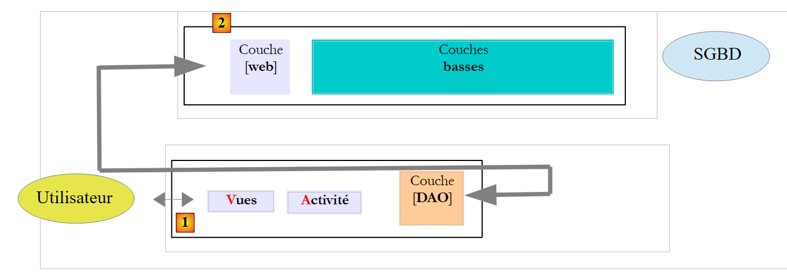 |
- en [1], l'utilisateur utilise une tablette Android qui communique avec un ou plusieurs services web [2] ;
Revenons au modèle APU :
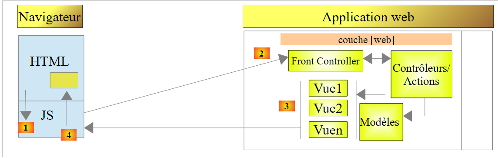 |
- une page initiale est chargée dans le navigateur (le schéma ci-dessus ne dit pas d'où elle vient) ;
- les vues suivantes sont obtenues par des appels Ajax [1-4]. Aucune nouvelle page ne sera chargée par le navigateur ;
La vue initiale peut être fournie ou non par le même serveur que les autres vues obtenues par des appels Ajax. Si elle n'est pas fournie par le même serveur, le Javascript de la page initiale doit connaître l'URL du serveur web qui va délivrer les autres vues. Ce sera le cas dans l'application Android que nous allons construire :
 |
- la page statique [index.html] va être encapsulée dans une application native Android [1] qui a les capacités d'un navigateur, capable donc d'exécuter le Javascript embarqué dans la page [index.html] ;
- cette page va obtenir les autres vues par des appels Ajax au serveur [2]. Pour cela, elle a besoin de connaître l'URL du serveur web ;
Nous allons refactoriser l'application [pam-web-02] pour qu'elle fonctionne sur ce mode. Ainsi la première page sera la suivante :
 |
- en [1], l'URL de la page initiale de l'application. Elle nous sera fournie par le serveur Ultidev étudié au paragraphe 9.26 ;
- en [2], l'utilisateur devra entrer l'URL du simulateur de paie. On pourrait la rentrer en dur dans le code Javascript de la page initiale, mais cela compliquerait les tests : dès qu'on changerait le simulateur d'adresse IP (ou de port), il faudrait alors la changer dans le code Javascript ;
- en [3], le lien [Connexion] qui va aller chercher la vue suivante :
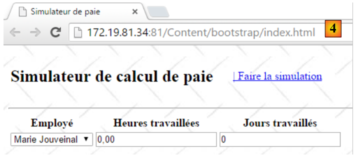 |
- on notera qu'en [4], l'URL du navigateur n'a pas changé. C'est toujours celle de la page initiale et restera ainsi pendant toute la durée de vie de l'application.
Une fois cette vue obtenue, tout fonctionne comme précédemment : les différentes vues sont obtenues par des appels Ajax. Nous allons voir que très peu de code doit être modifié.
9.27.2. Refactorisation du projet [pam-web-02]
A l'intérieur du dossier [Content] du projet [pam-web-02], nous construisons le dossier [bootstrap] (le nom n'importe pas) suivant :
 |
Nous y avons inclus la page statique [index.html] et toutes les ressources dont elle a besoin (fichiers CSS et JS). La page [index.html] reprend le code de la page maître [_Layout.cshtml] du projet Visual Studio en éliminant tout ce qui n'est pas statique. Cela donne le code suivant :
<!DOCTYPE html>
<html xmlns="http://www.w3.org/1999/xhtml">
<head>
<title>Simulateur de paie</title>
<meta charset="utf-8" />
<meta name="viewport" content="width=device-width" />
<link rel="stylesheet" href="Site.css" />
<script type="text/javascript" src="jquery-1.8.2.min.js"></script>
<script type="text/javascript" src="jquery.validate.min.js"></script>
<script type="text/javascript" src="jquery.validate.unobtrusive.min.js"></script>
<script type="text/javascript" src="globalize.js"></script>
<script type="text/javascript" src="globalize.culture.fr-FR.js"></script>
<script type="text/javascript" src="jquery.unobtrusive-ajax.min.js"></script>
<script type="text/javascript" src="myScripts.js"></script>
</head>
<body>
<table>
<tbody>
<tr>
<td>
<h2>Simulateur de calcul de paie</h2>
</td>
<td style="width: 20px">
<img id="loading" style="display: none" src="indicator.gif" />
</td>
<td>
<a id="lnkConnexion" href="javascript:connexion()">
| Connexion<br />
</a>
<a id="lnkFaireSimulation" href="javascript:faireSimulation()">
| Faire la simulation<br />
</a>
<a id="lnkEffacerSimulation" href="javascript:effacerSimulation()">
| Effacer la simulation<br />
</a>
<a id="lnkVoirSimulations" href="javascript:voirSimulations()">
| Voir les simulations<br />
</a>
<a id="lnkRetourFormulaire" href="javascript:retourFormulaire()">
| Retour au formulaire de simulation<br />
</a>
<a id="lnkEnregistrerSimulation" href="javascript:enregistrerSimulation()">
| Enregistrer la simulation<br />
</a>
<a id="lnkTerminerSession" href="javascript:terminerSession()">
| Terminer la session<br />
</a>
</td>
</tbody>
</table>
<hr />
<div id="content">
<table>
<tr>
<td>URL du simulateur</td>
<td><input type="text" id="urlServiceWeb" name="urlServiceWeb" size="80"></td>
</tr>
</table>
<div id="erreur">
<h3>Réponse du serveur :</h3>
<div id="erreur1"></div>
<div id="erreur2"></div>
</div>
</div>
</body>
</html>
Nous avons ajouté les points suivants :
- lignes 27-29 : on a ajouté l'option de menu [Connexion] pour permettre la connexion au service de simulation ;
- lignes 55-56 : la saisie de l'URL du simulateur ;
- lignes 59-63 : une zone d'erreur si la connexion échoue ;
La refactorisation du code se fait uniquement dans le code [myScripts.js] de la ligne 14 ci-dessus. Rien d'autre ne change. Le code évolue de la façon suivante :
// au chargement du document
$(document).ready(function () {
// on récupère les références des différents composants de la page
loading = $("#loading");
content = $("#content");
erreur = $("#erreur");
erreur1 = $("#erreur1");
erreur2 = $("#erreur2");
// les liens du menu
lnkConnexion = $("#lnkConnexion");
lnkFaireSimulation = $("#lnkFaireSimulation");
lnkEffacerSimulation = $("#lnkEffacerSimulation");
lnkEnregistrerSimulation = $("#lnkEnregistrerSimulation");
lnkVoirSimulations = $("#lnkVoirSimulations");
lnkTerminerSession = $("#lnkTerminerSession");
lnkRetourFormulaire = $("#lnkRetourFormulaire");
// on les met dans un tableau
options = [lnkConnexion, lnkFaireSimulation, lnkEffacerSimulation, lnkEnregistrerSimulation, lnkVoirSimulations, lnkTerminerSession, lnkRetourFormulaire];
// on cache certains éléments de la page
loading.hide();
erreur.hide();
// on fixe le menu
setMenu([lnkConnexion]);
});
- lignes 6-8 : les identifiants de la zone qui affiche les erreurs de connexion dans la page [index.html] ;
- ligne 10 : le nouveau lien pour la connexion au simulateur ;
- ligne 21 : la zone d'erreur est initialement cachée ;
- ligne 23 : on n'affiche que le lien de connexion ;
Dans la page [index.html], le lien de connexion est défini de la façon suivante :
<a id="lnkConnexion" href="javascript:connexion()">
| Connexion<br />
</a>
La fonction JS [connexion] (ligne 1) est la suivante :
var urlServiceWeb;
var erreur, erreur1, erreur2;
function connexion() {
// on récupère l'urlServiceWeb du service web
urlServiceWeb = $("#urlServiceWeb").val();
// on récupère le formulaire de saisie
$.ajax({
url: urlServiceWeb + '/Pam/Formulaire',
type: 'POST',
dataType: 'html',
beforeSend: function () {
// signal d'attente allumé
loading.show();
},
success: function (data) {
// affichage résultats
content.html(data);
// menu
setMenu([lnkFaireSimulation]);
},
error: function (jqXHR) {
erreur2.html(jqXHR.responseText);
erreur1.html(jqXHR.getAllResponseHeaders().replace(/\r\n/g, "<br/>").replace(/\r/g, "<br/>").replace(/\n/g, "<br/>"));
erreur.show();
},
complete: function () {
// signal d'attente éteint
loading.hide();
}
});
}
- ligne 7 : on récupère l'URL saisie par l'utilisateur. Elle est mise dans la variable globale de la ligne 1. Ainsi elle sera connue dans les autres fonctions du fichier ;
- ligne 10 : on fait un appel Ajax à l'URL [/Pam/Formulaire] du simulateur. Cette URL rend la vue partielle de la saisie des informations de la simulation (employes, heures travaillées, jours travaillés). Dans la version initiale de [pam-web-02], cette URL était suffisante. Elle était automatiquement préfixée par l'URL qui avait amené la page initiale. Maintenant, on fait l'hypothèse que la page initiale peut être fournie par un autre serveur que celui qui supporte le simulateur. Il faut alors préfixer l'URL [/Pam/Formulaire] par la variable [urlServiceWeb] de la ligne 1, qui est l'URL du simulateur (par exemple, http://172.19.81.34/pam-web-02). Cela devra être fait pour tous les appels Ajax du fichier ;
- lignes 17-22 : en cas de succès de la connexion, la vue partielle [Formulaire.cshtml] est affichée et on affiche un menu avec le seul lien [Faire la simulation] (ligne 21) ;
- lignes 23-27 : en cas d'échec de la connexion :
- en ligne 24, on affiche la réponse HTML envoyée par le serveur web (s'il y en a une) ;
- en ligne 25, on affiche les entêtes HTTP envoyés par le serveur web (s'il a répondu) ;
C'est tout. En cas de succès, on obtient la page suivante :
 |
On est alors dans la situation précédente où désormais les vues sont obtenues par des appels Ajax. Ainsi ci-dessus, le clic sur le lien [Faire la simulation] va être exécuté par le code suivant du fichier [myScripts.js] :
function faireSimulation() {
// on récupère des références
var simulation = $("#simulation");
var formulaire = $("#formulaire");
// formulaire valide ?
var formValid = formulaire.validate().form();
if (!formValid) return;
// on fait un appel Ajax à la main
$.ajax({
url: urlServiceWeb + '/Pam/FaireSimulation',
type: 'POST',
data: formulaire.serialize(),
dataType: 'html',
...
});
// menu
setMenu([lnkEffacerSimulation, lnkEnregistrerSimulation, lnkTerminerSession, lnkVoirSimulations]);
}
- une unique modification a été apportée, celle de la ligne 10 où la précédente URL est désormais préfixée par celle du simulateur ;
9.27.3. Test du projet refactorisé
Au paragraphe 9.26, nous avons montré comment installer l'application [pam-web-02] sur le serveur Ultidev. Nous allons partir de là :
 |
- en [6], nous demandons l'affichage de la page [bootstrap/index.html]. On obtient la vue suivante :
 |
Tapons une URL erronée :
 |
- en [10], les entêtes HTTP de la réponse du serveur ;
- en [11], le document HTML de la réponse du serveur ;
Si on tape la bonne URL :
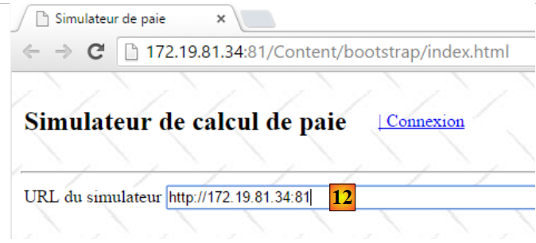 |
on obtient la réponse suivante :
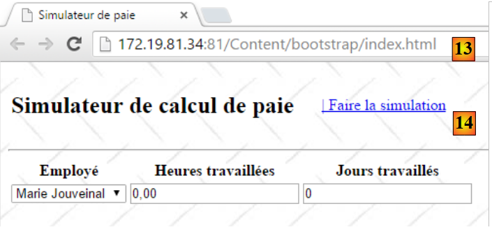 |
9.27.4. Création du binaire Android
Nous allons créer le binaire Android à partir du site statique que nous venons de créer et tester[1] :
 |  |
Nous ajoutons en [2], un fichier [config.xml] qui va servir à configurer le plugin [Phonegap] qui va générer le binaire Android. Son code est le suivant :
<?xml version='1.0' encoding='utf-8'?>
<widget id="android.exemples.pam" version="0.0.1" xmlns="http://www.w3.org/ns/widgets" xmlns:cdv="http://cordova.apache.org/ns/1.0">
<name>Pam</name>
<description>
IstiA - Université d'Angers
</description>
<author email="serge.tahe@univ-angers.fr">
Serge Tahé
</author>
<content src="index.html" />
<access origin="*" />
<allow-navigation href="*" />
<allow-intent href="*" />
<plugin name="cordova-plugin-whitelist" />
</widget>
- lignes 7-9 : mettez ici vos coordonnées ;
- lignes 11-13 : ces lignes permettent au Javascript embarqué dans l'application web qui va s'exécuter au sein du périphérique Android de requêter des URL extérieures à ce périphérique ;
Nous zippons le contenu du dossier [Content/bootstrap] :
 |
Ensuite nous allons sur le site de Phonegap [http://build.phonegap.com/apps] :
 |
- avant [1], vous aurez peut-être à créer un compte ;
- en [1], on démarre ;
- en [2], on choisit un plan gratuit n'autorisant qu'une application Phonegap ;
- en [3], on télécharge l'application zippée [4] ;
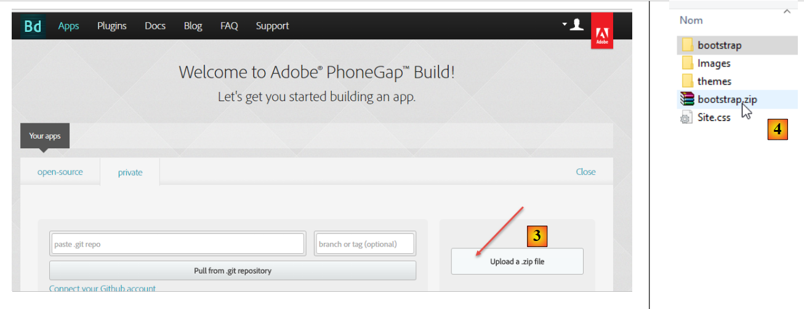 |
 |
- en [5], le nom à l'application ;
- cliquez sur le lien [6] pour construire les binaires des OS IoS, Android et Windows. Cela peut prendre quelques secondes ;
 |
- en [7-9], téléchargez le binaire Android ;
 |
Lancez un émulateur [GenyMotion] pour une tablette Android (voir paragraphe 11.1) :
 |
Ci-dessus, on lance un émulateur de tablette avec l'API 21 d'Android. Une fois l'émulateur lancé,
- déverrouillez-le en tirant le verrou (s'il est présent) sur le côté puis en le lâchant ;
- avec la souris, tirez le fichier [Pam-debug.apk] que vous avez téléchargé et déposez-le sur l'émulateur. Il va être alors installé et exécuté ;
 |
Mettez en [1], l'URL du simulateur comme il a été décrit au paragraphe 9.27.3. Ceci fait, connectez-vous au simulateur avec le lien [2] :
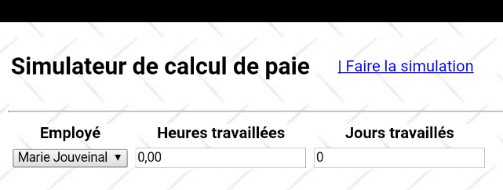 |
Testez l'application sur l'émulateur. Elle doit fonctionner.